This website investigates the socio-cultural biases present
in machine learning algorithms and
the representation of the World that is currently taught to Artificial Intelligence.
Datasets are collections of data, that act as pedagogical learning material when dealing with Artificial intelligences, most specifically, machine learning systems.
Current Artificial intelligences are, in fact, not programmed anymore in the old-fashioned way, where for instance to distinguish images of apples from pears lines of code expressing specific rules were written (e.g., if the color is red, then it’s an apple). Instead, current machine learning models are able to "learn” to execute such task by simply repeatedly analysing large numbers of labelled examples (images of apples) and counterexamples (images of pears).
Although these materials are often created to test the performance of algorithms, they tend to show how little attention is placed on the quality of the data itself.
Hence, this thesis focuses on the socio-cultural biases present in machine learning algorithms and investigates the representation of the world that is currently taught to Artificial Intelligence.
The first chapter, Everything but the kitchen sink, reflects on the evolution of the machine learning field, more specifically on how these technologies learn.
With the idea that the more data is provided, the better the performance, this chapter focuses on how data carry, together with information, also biases. Whenever it reflects stereotypes of the broader society, algorithms capture, learn and emphasise these stereotypes, often accentuating distinctions between classes, gender and nationality.
The second chapter, Bias as a bug discusses the actions adopted by researchers and companies to hide those specific biases from machine learning systems. Through the analysis of specific toolkits created to remove biases, it is argued that what these tools are actually doing is mathematically balancing datasets rather than making them impartial. Additionally, this chapter investigates the technologies that have been used with or without intention, to perpetuate prejudice and unfairness.
The third chapter, Bias as a feature explains that data itself is never impartial, especially because machine learning systems, by their very nature, learn by discrimination, looking for differences in patterns. Simultaneously, it shows that the attempts to remove biases are distorting a computer’s representation of the real world and they make it less reliable when making predictions or analysing data. Through a simple linguistic distinction, by not considering biases as bugs but as features, this chapter investigates how datasets are visualised and questions where the data used to teach Artificial Intelligence is coming from, arguing that this is essential to fully understand biases.
The last chapter, Bias as Artefacts, discusses three typologies. By analysing research papers, this chapter claims that datasets used in image recognition, natural language processing and computer vision carry temporal and geographical features from our society. It demonstrates that those specific features are not affected by the current actions to remove biases (e.g., balancing a dataset to have it gender neutral does not change its Americocentric content). Furthermore, drawing inspiration from the work of Robert Kitchin and Mark Graham, this chapter focuses on the actual spatialities produced by software. Starting from the locations of the creators of datasets, to the digital platforms where the data is fetched; spanning from the original metadata, to the countless number of external individuals involved.
In conclusion, by studying the geographies of datasets and the actions adopted to balance these materials, the present research aims to develop a methodology, where design is seen as a critical tool, to investigate the sources of datasets, and to frame a critical discussion around the decisions that few individuals are taking.
Introduction
“On two occasions I have been asked,— ‘Pray, Mr. Babbage, if you put into the machine wrong figures, will the right answers come out?’ I am not able rightly to apprehend the kind of confusion of ideas that could provoke such a question.’ ”
Babbage Charles, “Passages from the Life of a Philosopher” (1864).
With an uncertain origin, Garbage in, Garbage out, or G.I.G.O for short, dates back to the birth of computation, by referring to a program that could be as accurate in its logic as possible, but that generates an incorrect result if the input is invalid.
Even if the term appeared in the same period both in military (BIZMAC UNIVAC, GARBAGE IN-GARBAGE OUT, The Hammond Times), education (George Fuechse) and in optical character recognition research (Raymond Crowley),
G.I.G.O was always related to the use of physical written materials. Whether it was a machine that recognised text or one that produced it, garbage in the 60’s was referring to the actual piles of punch cards analysed by computers and thrown away by their operators.
Paper tape relay operation at US FAA's Honolulu flight service station in 1964 - https://upload.wikimedia.org/wikipedia/commons/d/db/Honolulu_IFSS_Teletype1964.jpg
Shifting towards a more generic and mildly pejorative use of the term, and by losing its physicality, today’s use of G.I.G.O is a sarcastic comment on the tendency to put excessive trust in computerised data.
Sixty years ago, garbage was a technical issue: by mispunching a hole while writing a FORTRAN program, the program would have not worked.
Example of FORTRAN punch card - https://commons.wikimedia.org/wiki/File:Punch_card_Fortran_Uni_Stuttgart_(1).jpg
Today it is an accuracy issue when dealing with the randomness of data: nonsense inputs lead to nonsense outputs. The program itself still works, but its outputs are meaningless for us. Before, computers were not able to read data, nowadays it is on how we read them. Here G.I.G.O. takes a critical meaning, reflecting to the impossibility of teaching Artificial Intelligences both objectively and impartially. It acts as a metaphor to reflect on who sees these outputs meaningful and who sees them meaningless. Contemporary digital inputs, considered the easiness of being trashed, should be visualised when used in humans decisions making process. Human decisions are at the core of this thesis: who is teaching what machines learn?
Everything but the kitchen sink
“We don’t have better algorithms. We just have more data.”
A result, namely the final consequence of a sequence of actions or events, qualitatively or quantitatively, is a term that in programming languages is often related to the value returned from a function.
We could therefore think of a result as the product of calculation. Nevertheless its definition is shifting from a mathematical explanation, determined by the consequence of logical and arithmetical steps, towards the product of more vague and intangible decisions. With a focus on Artificial Intelligences, these systems are often seen and described, even by tech companies, as black boxes Pasquale, 2015, The black box society: the secret algorithms that control money and information. Cambridge, Mass.: Harvard Univ. Press.. It is through the use machine learning techniques, a term coined by Arthur Samuel in 1959, that these computer systems are able to learn without being explicitly programmed. Nonetheless, these technologies still need input data to learn from, and the outputs (results) of their decisions are strictly connected to what programmers taught them.
Today, researchers and computer scientist are no longer just focusing on the mechanics and studies of these algorithms but they are also adopting a pedagogical role by deciding what to teach to these systems. As a consequence, a result should also be considered as the output of a process of social, ethical and political decisions.
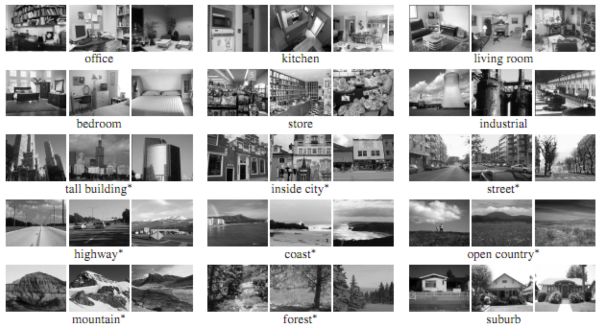
Examples of the 15 class scene dataset, used to show environments to artificial systems
- https://qixianbiao.github.io/Scene.html
From Rationalism to Empiricism
Progress in the functioning of the technologies used in AI shifted the way it functions from a rational to an empiric approach. Between about 1960 and 1985, most of linguistics, psychology and artificial intelligence, was completely dominated by a rationalist approach Manning & Schutze, 1999, Foundations of statistical natural language processing 8. [print.]. Cambridge, Mass.: MIT Press. That meant an approach based on the belief that part of the knowledge in our mind is not derived by the senses but is fixed in advance, by genetic inheritance. Therefore, rationalist beliefs lead to the creation of Artificial Intelligences with fixed mechanisms.
Claude Shannon shows his maze-solving machine - http://cyberneticzoo.com/wp-content/uploads/Shannon-Life-p47-x640.jpg
As an example, there would be the Micro-Worlds system created Marvin Minsky and Seymour Papert in the late 60’s. Their research focused on the so-called blocks world, where blocks of different colors, shapes and sizes were arranged on a flat surface. The name Micro-worlds referred to the idea of focusing on a simple situation and by trying to imagine all the possible interactions that could happen in that scenario. It then resulted in SHRDLU, an interactive visualisation of the blocks world where a robotic arm would play with the different shapes. As Copeland (2000) explains, SHRDLU would respond to commands typed in natural English, such as " Will you please stack up both of the red blocks and either a green cube or a pyramid? ".
Low resolution video of SHRDLU, by Terry Winograd - https://www.youtube.com/watch?v=bo4RvYJYOzI
The program would plan out a sequence of actions and in the virtual world the robot arm would arrange the blocks appropriately. Even though this was initially seen as a major breakthrough, the project was in fact a dead end. SHRDLU was capable of following instructions, but it had no idea of what a cube or a pyramid were, and it was unable to answer to commands different from the ones scripted by its creators.
Empiricist approaches, on the other hand, are not linked to a detailed sets of principles and procedures, rather they focus on the idea that a baby’s brain begins with general operations for association, pattern recognition, and generalization (ibidem). Given a collection of information or dataset to a system, this would learn from experience. By comparing the input data, machine learning technologies learn by finding hidden patterns. Departing from Minsky and Papert ’s idea of Micro-worlds, after fifty years of computer development with easier accesses to large amounts of information, has now made it easier to develop Artificial Intelligence following empirical approaches: feeding large amounts of data to a system, will enable this system to make its own connection, on visual and structural aspects.
Learning Materials
It may seems that it has never been easier to work with machine learning systems than it is today, considering the variety of available cloud based tools provided by Amazon, Microsoft and Google. To name but one, TensorFlow, the main open source library for machine learning created by Google, provides pre-built datasets for people to use, facilitating the set up of custom systems.
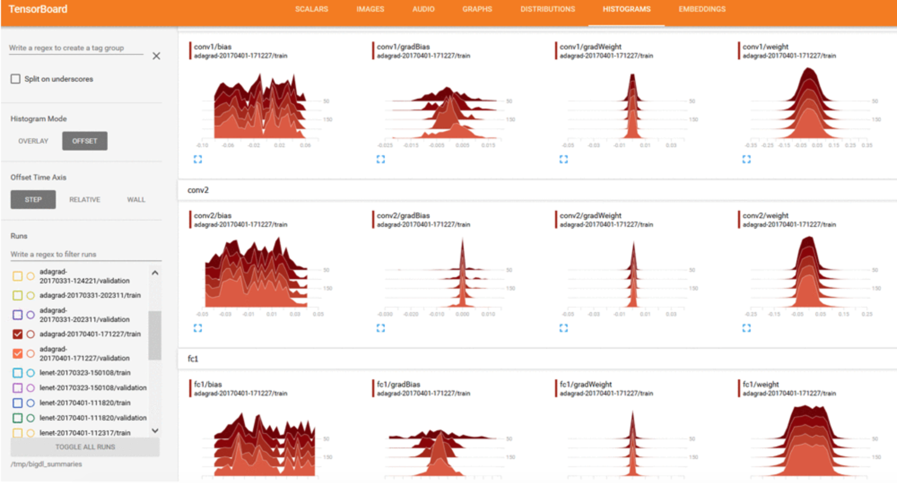
TensorBoard, an interface tool provided by TensorFlow - https://aws.amazon.com/it/blogs/machine-learning/running-bigdl-deep-learning-for-apache-spark-on-aws/
With tools like TensorFlow, focusing primarily on the mechanism and the performance of these machines, much less interest is given to the resources on which they work, whereas these latter ones are build and controlled by a few individuals. As seen from the recent scandals regarding Cambridge Analytica, social network platforms like Facebook and Instagram are gathering detailed and personal information. From behavioural data to pictures, from audio to medical reports. Aside paying more attention to the unregulated exploitation of these personal information, demanding more transparency Pasquale, 2015, The black box society: the secret algorithms that control money and information. Cambridge, Mass.: Harvard Univ. Press., we should also focus on how they are being used to educate artificial agents. Ranging from universities, governmental organisations, digital libraries and web-based hosting service such as Github, dataset are built, modified and shared on a daily basis.
The Iris Dataset (1935)
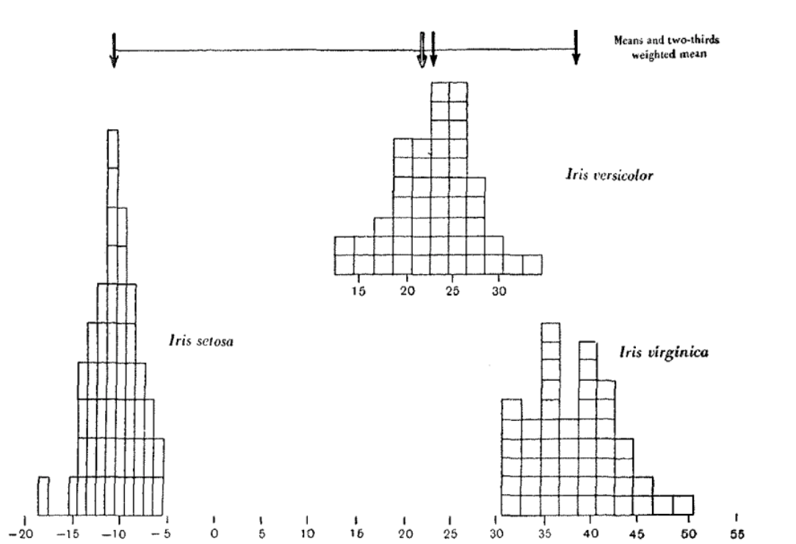
Histograms showing differences for three species of Iris, Fisher R. A., THE USE OF MULTIPLE MEASUREMENTS IN TAXONOMIC PROBLEMS, 1936
and MNIST (1999)
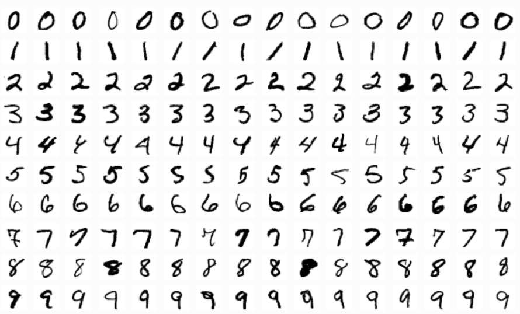
Sample images from MNIST test dataset - https://codeburst.io/use-tensorflow-dnnclassifier-estimator-to-classify-mnist-dataset-a7222bf9f940
have always been used as benchmarks. Specially, they were created for us to study and test machines, whereas newer algorithms are often relying on chunks of information, merely collected from the web. From Imagenet to SpaceNet, from Common Crawl to CIFAR. If we consider that a taxonomy as specific as the Iris dataset, which recorded the petal length and width of three species of Iris, lost its scientific truth
Bezdek et al. explain how through errors in transcribing, several versions have been published.
Bezdek et al., 1999, Fuzzy Models and Algorithms for Pattern Recognition and Image Processing. Boston, MA: Springer Science+Business Media, Inc. Retrieved from http://www.springerlink.com/openurl.asp?genre=book&isbn=978-0-387-24515-7, but it is still widely used and available through Tensorflow; how are other learning materials designed, by whom and where are they used for?
With enigmatic and often unknown inputs, insufficient focus is placed on these materials. For instance, if we consider the Tensorflow Object Detection API, a framework developed for computer vision to recognise objects, the elements it can detect are based on Microsoft COCO ( a dataset of objects and their captions).
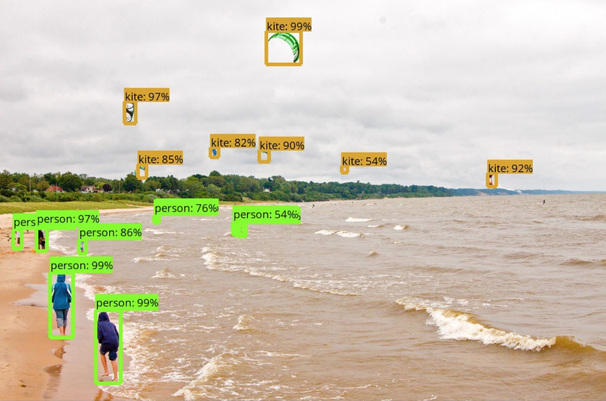
Sample image from the Tensorflow Object Detection API - https://github.com/tensorflow/models/tree/master/research/object_detection
Yet, in the paper published by the creators of this dataset (Lin et al., 2014), the only information they share regarding the images they collected are unclear: We employed a novel pipeline for gathering data with extensive use of Amazon Mechanical Turk. First and most importantly, we harvested a large set of images containing contextual relationships and noniconic object views.
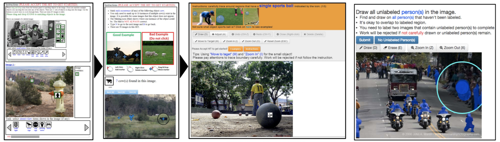
Examples of the interface used to detect objects for COCO - https://arxiv.org/pdf/1405.0312.pdf
Designing stereotypes
Artificial Intelligence is now in every object, from phones to lights, from maps to lockers. With the many advantages these algorithms provide, critiques on artificial agents are often focused on speculation, mainly with a sci-fi dystopian point of view. By mystifying this technology, media places emphasis on what this technology is not. Headlines such as: “AI Is Inventing Language Humans Can’t Understand. Should We Stop It?”, “Scientists Are Closer to Making Artificial Brains That Operate Like Ours Do” or “ AI to bring 'mankind to edge of APOCALYPSE' - with robots a bigger risk than NUKES” dominate the news on a daily basis.
However, Artificial Intelligence is just a sophisticated form of pattern recognition that comes with extensive limits in terms of social bias, creativity and invention of the new Pasquinelli, 2018, Exploring the Limits of Artificial Intelligence. Retrieved 17 January 2019, from http://kim.hfg-karlsruhe.de/limits-of-artificial-intelligence.
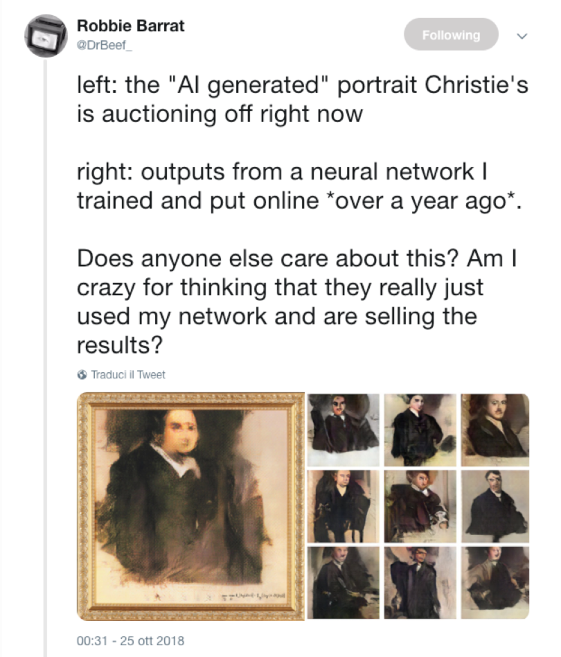
One of Robbie Barrat’ s tweets that raised questions over the ownership of algorithmic arts - https://twitter.com/drbeef_/status/1055285640420483073?lang=en
And all of the importance attributed to algorithms beating humans games like chess are only significant because AI researchers believed it to be significant Ensmenger, 2012, Is chess the drosophila of artificial intelligence? A social history of an algorithm. Social Studies of Science, 42, 5–30. https://doi.org/10.1177/0306312711424596. These programmes are not only creating new functionalities, but way too often they also emphasise distinctions between classes, gender and nationality. As machine learning techniques are becoming easier to access, their use is often disproportionate and irresponsible. Whenever data reflect biases present in the broader society, the learning algorithm captures, learns and emphasise these stereotypes. Otherwise, as Bowker & Star (1999) said:
“Values, opinions and rhetoric are frozen into codes, electronic thresholds, and computer applications”.
Many researchers seem to choose quantity over quality in the dataset they create, focusing on the performance and optimization of the learning algorithms and ignoring possible biases. When working with text, Wikipedia and Google News provide easy access to large amounts of public materials written in multiple languages, whereas facial recognition and human posture datasets are merged with data often deriving from military photograph or body scans Niquille, 2018, Regarding the Pain of SpotMini: Or What a Robot’s Struggle to Learn Reveals about the Built Environment. Architectural Design, 89, 84–91. https://doi.org/10.1002/ad.2394. Furthermore, rendering of interiors, essential for artificial agents capable of moving in three dimensional spaces, are mostly collected from online libraries of 3d models. Many more examples could be mentioned, from biological data to audio material, towards more general and multivariate data. Even users are playing an active role in the training: by engaging with tools such as Google Home or Alexa, customers are shaping how future products will perform, by constantly feeding them words.
Just collecting huge chunks of information should not be enough to educate artificial intelligences and these kinds of approaches are lacking a clear editorial understanding.
The examples just mentioned mainly reflect an Americentric and Eurocentric view of our world. Most of the contents on Wikipedia portray a biased history, the bodies of soldiers are usually different from the average person
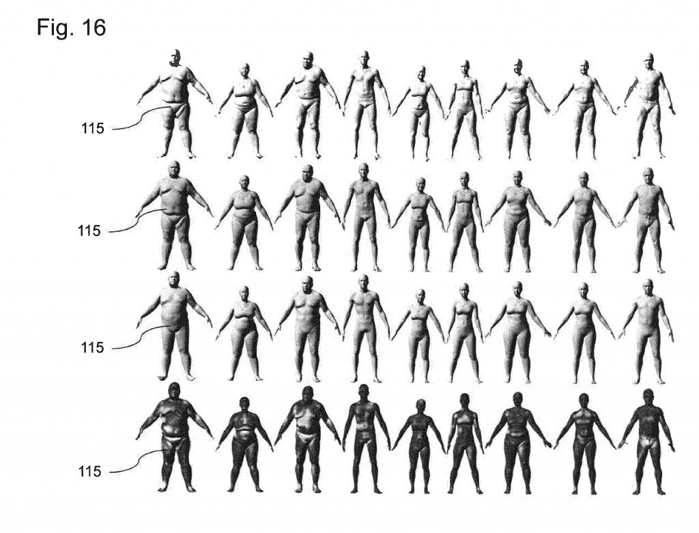
Subject 00082, Caesar Dataset
- https://research-development.hetnieuweinstituut.nl/en/fellows/fragility-life
and the vast majority of renderings from 3d modeling software (such as SketchUp) depict Western examples of furniture.
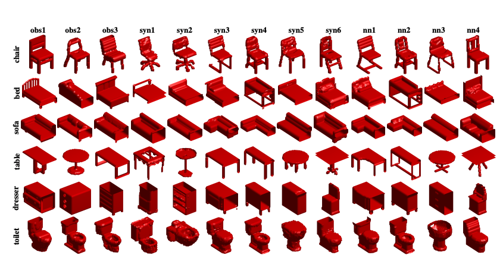
Samples of 3d generated objects from Modelnet, by Princeton University - https://www.profillic.com/paper/arxiv:1804.00586
It also happens that datasets are built so quickly, for researchers to verify the mechanisms of the learning algorithms, that they actually make no sense at all. As a matter of facts, Chatbots are usually trained on data that can be easily found online, such as posts on Twitter, scripts of Hollywood movies or comments from Reddit. Although, these learning materials are leading chatbots to have random and unrealistic conversations, such as: “Question: what do you like to do in your free time? Answer: what about the gun?”
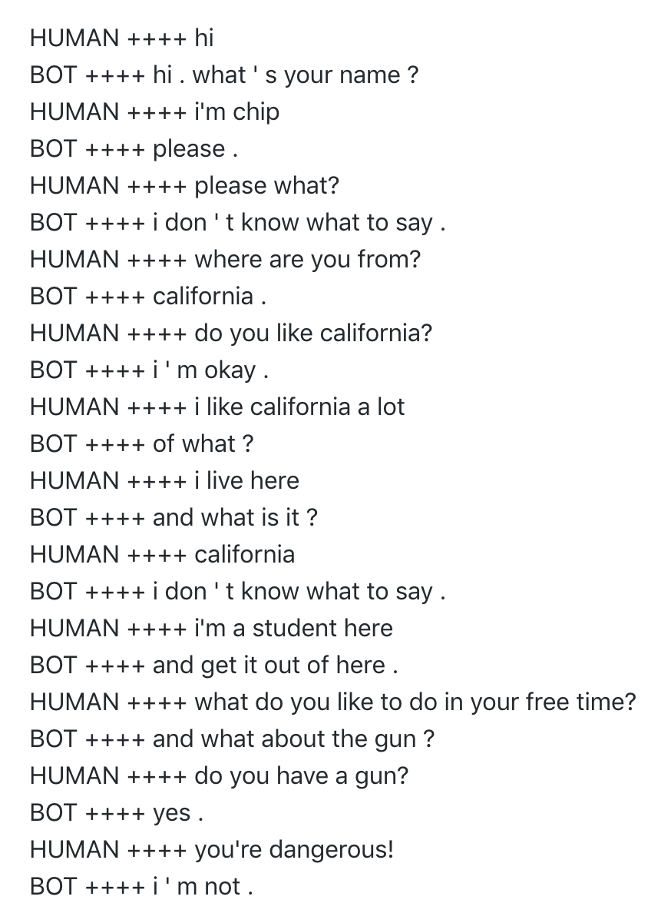
https://github.com/chiphuyen/stanford-tensorflow-tutorials/tree/master/2017/assignments/chatbot text: Sample conversation of a chatbot.
Machine Teaching
People in the business of culture knows about Guttenberg, Brunelleschi, The Lumiere Brothers, Griffith and Eisenstein. And yet, a few people heard about the individuals that have gradually turned computer into a cultural machine it is today Manovich, 2008, Software takes command: extending the language of new media. New York ; London: Bloomsbury.. Even less is known regarding Artificial Intelligence. As its history covers a time span of almost 75 years, this technology keeps having its main development on technological aspects, from military use (e.g. Alan Turing’s work on cryptology in 1936
Turing Alan, “On Computable Numbers, with an Application to the Entscheidungsproblem” (1936).
) to the constant optimisation of curve fitting
The process of finding the best mathematical function for the available data
Pearl & Mackenzie, 2018, The book of why: the new science of cause and effect. New York: Basic Books.. Little attention has been paid to the development of literature on algorithms as social concerns, where algorithms are seen as objects of interest for disciplines beyond mathematics, computer science, and software engineering Gillespie & Seaver, 2015, Critical Algorithm Studies: a Reading List. Retrieved 18 January 2019, from https://socialmediacollective.org/reading-lists/critical-algorithm-studies/.
“Software can be seen as an object of study and an area of practice for kinds of thinking and areas of work that have not historically “owned” software, or indeed often had much of use to say about it.” Fuller, 2008, Software studies: a lexicon. Cambridge, Mass: MIT Press.
Following empirical logics, machines rely on us and they only learn from what we show them. The misguiding term “machine learning” should be instead replaced by the term machine teaching, as it is in the teachers duty to decide what they should transmit, what task they should assign and what the A.I. should learn. We should therefore begin to approach this topic as a new kind of social science, focused on explaining the social, economic, and spatial contours of software and data Kitchin & Dodge, 2011, Code/space: software and everyday life. Cambridge, Mass: MIT Press..
Except of Russian speaking countries, where the field itself is called Машинное Обучение, and Обучение literally means “teaching”;
by changing the terminology and therefore by placing the responsibility on the teacher would helps us to realise how tricky this process is. By defining the term machine teaching, these two words act similarly to a manifesto.
Drawing inspiration from the concept of the philosophy of information, which it also investigates ethical problems (in computer and information ethics and in artificial ethics) Floridi, 2011, The philosophy of information. Oxford ; New York: Oxford University Press. and with a focus on linguistic aspects, computational techniques and geographical aspects, in the development of the current research, machine teaching will be characterized by three main aspects. Starting by questioning the actual definition of bias and what biases are, followed by an analysis of the techniques adopted to fix or to remove them. Finally, by examining the actual datasets, going back to all the steps that occured in the creation of these materials and the hidden geographies they contain.
Bias as a bug
“It is easier to remove biases from algorithms than from people, and so ultimately AI has the potential to create a future where important decisions, such as hiring, diagnoses and legal judgements, are made in a more fair way.”
Machine learning and Artificial Intelligence are words used in multiple contexts with different meanings, sparking confusion between researchers and the broader public. Even the term bias has contradicting connotations and in the history of the word itself there are overlapping mathematical and social definitions.
With an unknown origin, probably derived from Old Provençal, bias first appears in the 14th century, indicating an oblique or diagonal line. Only in the 16th century it starts to have a figurative meaning, referring to a one-sided tendency of the mind and later on of an undue propensity or prejudice. It is in the 20th century that bias partly retains its technical definition where in statistics it refers to systematics differences. We could then see how the term bias is being used in contexts regarding measurements and accuracies. At the same time, as Kate Crawford (2017) explains,
in its legal definition, bias is referring to a judgment based on preconception or prejudice. The partial evaluation of facts. Thus, it seems that these very different meanings are used simultaneously to describe algorithmic biases. Software are biased by having prejudice and not being impartial, whereas the data from which they learn are biased by not being precise. Therefore it seems that artificial intelligences could be impartial if the data fits the system.
Following this idea, computer scientists are claiming a pedagogical position by stating that they must identify sources of bias, de-bias training data and develop artificial-intelligence algorithms that are robust to skews in the data.
And this lead to approach biases as a binary classification task: bias or non-bias; where different researchers are trying to map all the possible ways there are to encounter biases
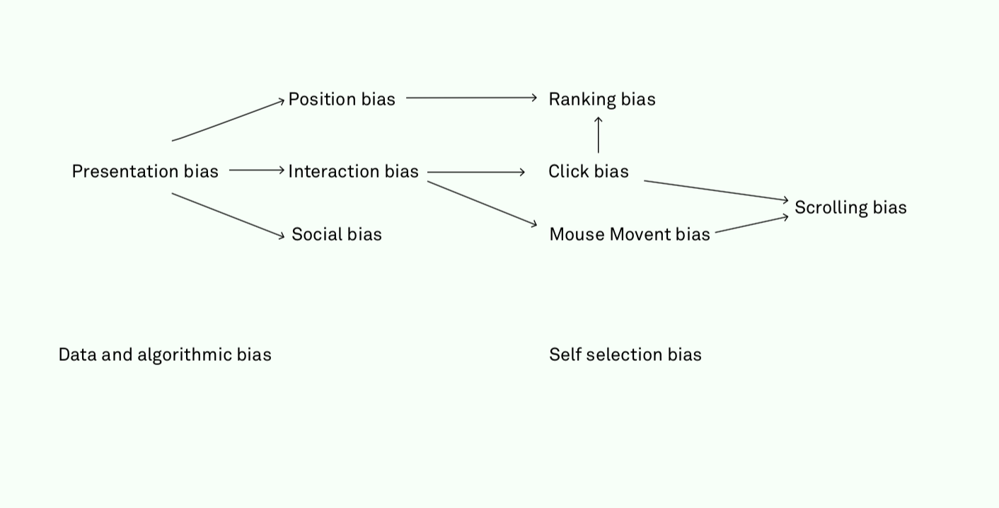
Possible types of biases according to Ricardo Baeza-Yates- https://twitter.com/i/web/status/931533201587175425
And headlines like: “Science may have cured biased ai” are incentivising computer scientist to continue doing what they are doing: fixing artificial agents by deleting information. Nevertheless, these approaches are not even preventing future algorithms from being biased. We have to consider that bias is more than a mathematical problem and the idea that data might be subjective and unfair should be contemplated.
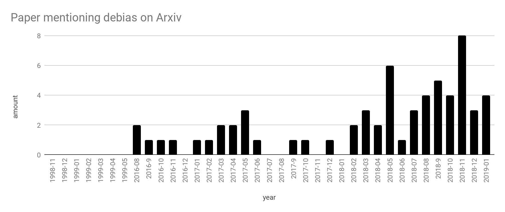
In the current thesis I mainly focus on two types of bias defined by researchers: selection bias and latent bias.
The first happens when there is a systematic error in the creation of a dataset in the means of not having enough diverse data. For instance, when Google Photos confused a black person for a Gorilla.
Since facial recognition datasets have more pictures of white individuals, these are easier for an Artificial Intelligence to see, compared to the fewer images available of other ethnic groups. Instead, latent bias occurs when the training data lead to stereotypes. By learning on Wikipedia’s content, the natural language processing system that makes Google Translate work, when translating from gender neutral languages to English, assigned professions such as nurse or homemaker to women and such as boss or programmer to men.
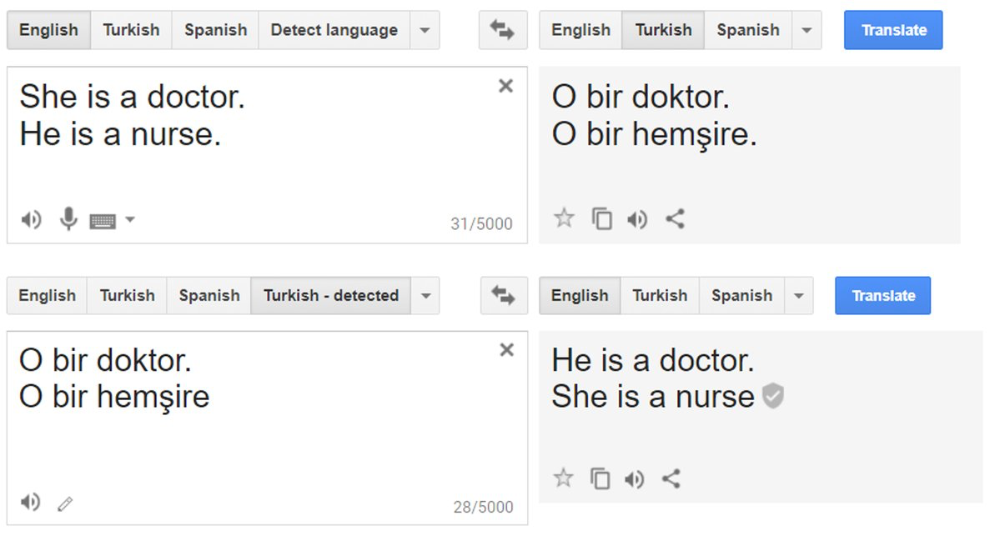
Both are problematic and directly affect humans. Non-caucasian ethnic groups tend to be marginalised and women to be less noticed for certain job application. Today, Google Photos does not confuse human beings with animals, after the fixes made by Google’s computer engineers, where they removed gorillas and monkeys from Google’s learning material .
On the other hand, Google is working on providing feminine and masculine translations for some gender-neutral words Kuczmarski, 2018, Reducing gender bias in Google Translate. Retrieved 28 January 2019, from https://www.blog.google/products/translate/reducing-gender-bias-google-translate/, but a similar issue still focused on natural language processing (the application of computational techniques to the analysis of natural language and speech) has completely changed. Google's sentiment analysis is a tool designed for companies to have a preview of how their language will be received by deeming certain words positive and others negative. According to this device, a word such as homosexual had a negative value whereas white power a positive one.
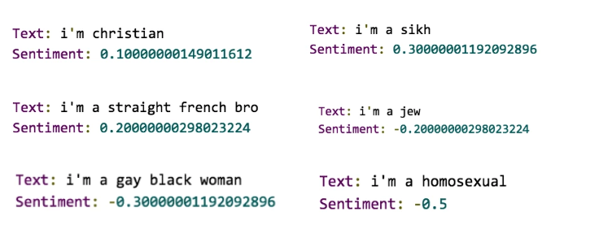
FIG. 22 Example of Google sentiment analysis api, by Motherboard - https://motherboard.vice.com/en_us/article/j5jmj8/google-artificial-intelligence-bias?utm_source=mbtwitter
As soon as this interpretation were noticed, Google changed these values to neutral.
Balancing Dataset
Although we are just starting to understand the implication of biases, the topic itself is starting to get more and more attention from the media. By already making defined statements, companies such as IBM answers by promising that, even though within five years the number of biased Ai systems and algorithms will increase, they will come up with new solutions to control them and champion systems free of it; (e.g., the headline: AI bias will explode. But only the unbiased AI will survive by IBM Research).
As a consequence, besides IBM, Google and Facebook are now creating tools to detect biases and for customers to see how their machine-learning models are working;
Demo of the Ai Fairness 360 - http://aif360.mybluemix.net/
with the ultimate goal of stopping future biases by creating neutral systems. Even though, today not all of these tools are fully available online, they have already been emphasised by media, where articles like IBM reveals a toolkit for detecting and removing bias from AI consider biases a problem that now solvable, or even, already solved.
But what companies and researchers are doing with these tools is invisibly finding ways to equalise datasets, by camouflaging a stability. When they are not neutralising specific values, like the examples mentioned before, two approaches are commonly used to make a balanced dataset out of an imbalanced one: undersampling and oversampling. The first balances the dataset by reducing the size of the abundant class. It is often adopted when the quantity of data is sufficient, by keeping all samples in the rare class and randomly selecting an equal number of samples in the abundant class. Oversampling is instead used when the quantity of data is insufficient. This technique tries to balance a dataset by increasing the size of rare samples. Rather than getting rid of abundant samples, new rare samples are generated.
To simplify, if we were to create a dataset of images of nurses with data from Google Images, we would have a majority of female faces. Let’s say that we have five images where four are female and one is male and we want to equalise it. By undersampling, we would have to delete three female images to have it balanced, therefore having one male and one female. Instead, by oversampling, we would have to add three images of male nurses. To do so, we could replicate three times the image we have or we would have to find more images elsewhere.
In fact, these exact techniques are embedded in tools such as the Ai Fairness 360, promoted by IBM, which is focused on creating fair systems. In the available demo provided online, they state that:a variety of algorithms can be used to mitigate bias. The choice of which to use depends on whether you want to fix the data (pre-process), the classifier (in-process), or the predictions (post-process).
And the actions to “fix the data” are using resampling techniques, with the scope of removing or changing the value of certain elements in the dataset. But which elements get deleted and where are other examples coming from?
In the code they share on Github, they explain that they use reweighing, a preprocessing technique that weights the examples in each (group, label) combination differently to ensure fairness before classification.
Reweighing needs the weights to be carefully chosen Kamiran & Calders, 2012, Data preprocessing techniques for classification without discrimination. Knowledge and Information Systems, 33, 1–33. https://doi.org/10.1007/s10115-011-0463-8, but all of these actions are performed computationally, where without looking at the actual data, they mathematically balance datasets. They change the importance attributed to certain values, but not their prejudice.
“Tools and equipment never exist simply in themselves, but always refer to that which can be done with them” Verbeek, 2005, What things do: Philosophical reflections on technology, agency, and design. University Park, Pennsylvania State University Press..
In a way, tools also refer to that who can use them. The Ai Fairness 360 (IBM) or the What-If Tool (Google)
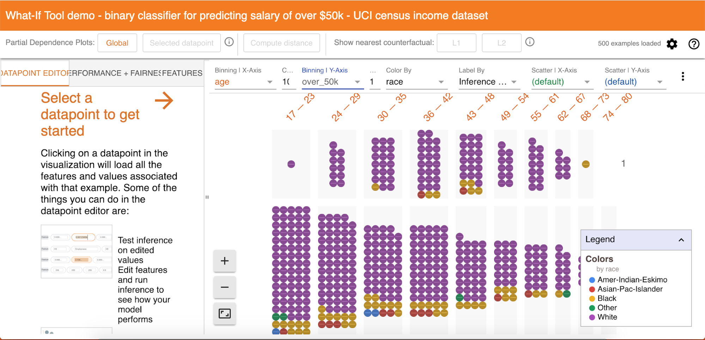
Demo of the What-If Tool by Google - https://pair-code.github.io/what-if-tool/
are open source toolkit, directed primarily to a specialized audience. Except of few demos available online, the interface is only accessible by processing the source code shared on Github, as previously analysed. And still, even with a graphical interface, the language and the navigation of such tools are just focused for programmers, or more specific: computer scientists.
The responsibility of bias
Artificial intelligence (AI) is not just a new technology that requires regulation. It is a powerful force that is reshaping daily practices, personal and professional interactions, and environments. For the well-being of humanity it is crucial that this power is used as a force of good. Ethics plays a key role in this process by ensuring that regulations of AI harness its potential while mitigating its risks.Taddeo & Floridi, 2018, How AI can be a force for good | Science. Retrieved 18 January 2019, from http://science.sciencemag.org/content/361/6404/751.
With this in mind committees and organisations are organising workshops to analyse algorithmic bias and its impacts. As an example, the Fairness, Accountability, and Transparency in Machine Learning (FAT ML) workshop, that was created by researchers from Google and Microsoft. Specifically Kate Crawford proposes more multidisciplinary approaches. She founded the Ai Now Institute at New York University, where a research center is fully dedicated to understanding the social implications of artificial intelligence. Others, like Simone Niquille, believe in more pedagogical approaches. Niquille (2019), a designer focusing on the representation of the human body in virtual spaces, suggested that designers should be in charge of designing the objects used in computer vision.
All around the world, people are starting to be aware of the need to regulate these systems, but all the examples earlier mentioned are mainly focusing on creating ways to define neutrality. But neutrality is not always comparable with justice, and it is not the society we live in. For instance, if Google would have fixed the issue with gorillas by adding more faces of African-American, where would those images come from? The main databases filled with the needed photos are coming from criminal archives, such as the NYPD gang members dataset.
As a consequence we would have had a better algorithm capable of recognising a greater variety of faces but also a better system to track and control these individuals.
Creating Bias
Artificial intelligence and machine learning are in a period of astounding growth. However, there are concerns that these technologies are been used, either with or without intention, to perpetuate the prejudice and unfairness that unfortunately characterizes many human institutions Caliskan-Islam et al., 2016, Semantics derived automatically from language corpora contain human-like biases. https://doi.org/10.1126/science.aal4230. As tricky it is to notice biases in machine learning, as it is to regulate them and set boundaries. Who decides which categories and taxonomies are acceptable? With the multiple advantages that open source tools provide, by becoming easier to approach for a broader public and letting people create new application; they also facilitate the creation of unethical systems, which are difficult to regulate.
Throughout history, defining differences has always played an important role in differentiating social classes; and this lead to pseudoscientific beliefs that empirical evidence exists to support or justify racism.
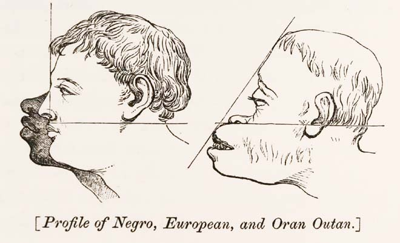
Gould Stephen Jay, “The mismeasure of man” (1981).
Scientific racism, is now seeing a digital rebirth with machine learning technologies; where due to their abilities in identifying patterns, they are been used to create racist and sexist classification. These tools, that may be seen as scientific truth risk to emphasise discrimination.
In 1876 Cesare Lombroso wrote L’uomo Delinquente (The criminal man),
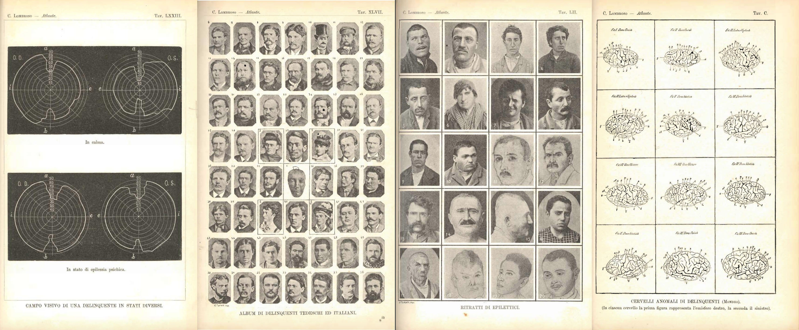
Lombroso Cesare, “L’uomo delinquente e l'atlante criminale” (1897) - https://www.bfm.unito.it/sites/b081/files/allegatiparagrafo/03-05-2018/uomo_delinquente_atlante1.pdf
an anthropological theory, where he believed that criminals carried anti-social feature from their birth. Today denied, his theories are based on a series of books he produced where he described in details characteristics of the human body.
The criminal man's theory was also formulated for ideological purposes. Lombroso wanted to be a part of the political debated of those years to help, with the support of science, the post-unification of Italy and solve the phenomenon of the The Southern Question, which was the aggregate of problems arising from the extreme economic, social, and cultural backwardness that characterized the historical development of southern Italy. If Lombroso forced his own ideology in the form of a pseudoscience, today engineering researchers Xiaolin Wu and Xi Zhang did the same. In the paper Automated Inference on Criminality using Face Images they explain to have used machine learning to define features of the human face that are associated with “criminality”. They claimed to have developed an algorithm that, from a simple headshot, can distinguish criminals from non-criminals.
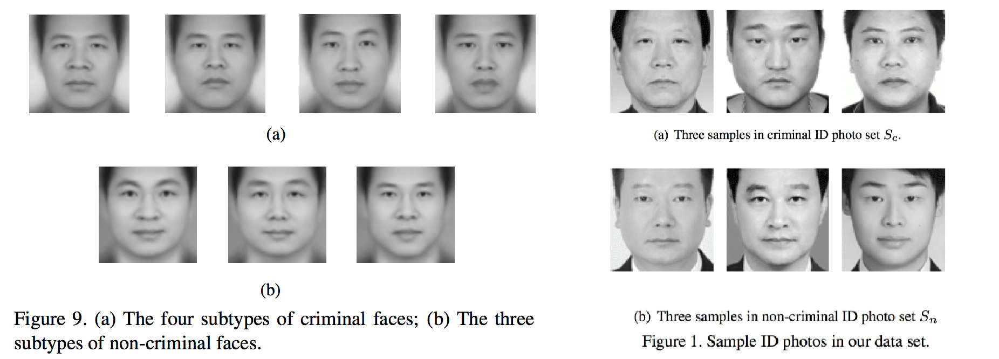
Samples of images contained in Automated Inference on Criminality using Face Images
By looking at the image,
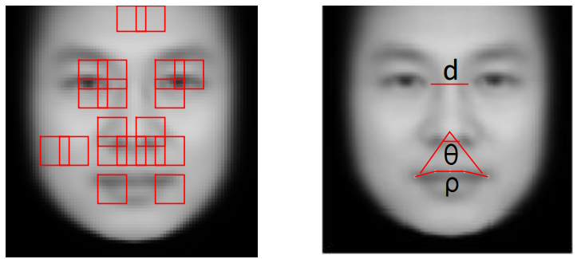
Samples of images contained in Automated Inference on Criminality using Face Images
Wu and Zhang explain that the angle θ from nose tip to two mouth corners is on average 19.6% smaller for criminals than for non-criminals and has a larger variance. Also, the upper lip curvature ρ is on average 23.4% larger for criminals than for noncriminals. On the other hand, the distance d between two eye inner corners for criminals is slightly narrower (5.6%) than for non-criminals. But there’s a glaringly obvious explanation for the curvature of the lip ρ and the angle θ that starts from the tip of the nose and reaches the corners of the mouth. It simply changes if one smiles. All the criminal faces in their training set show criminals frowning, whereas the non-criminals are faintly smiling. A more plausible scenario is the one of having an algorithm that is able to distinguish between smiling and not smiling, instead of criminal and non-criminal.
The paper, released in 2016 was later edited by adding an answer to the critiques the writers received.
In Responses to Critiques on Machine Learning of Criminality Perceptions they state that, like most technologies, machine learning is neutral and that well-trained human experts can strive to ensure the objectivity of the training data.
Whereas regarding the facial expression in the training set, Wu and Zhang reply by saying that they controlled them and that their “Chinese students and colleagues, even after being prompted to consider the cue of smile, fail to detect the same. Instead, they only find the faces in the bottom row appearing somewhat more relaxed than those in the top row. Perhaps, the different perceptions here are due to cultural differences”.
Whether they were smiling or they were relaxed, by confusing facial features with facial expressions these kind of systems could seriously endanger people.
Concurrently, in 2017, Yilun Wang and Michal Kosinski (Assistant Professor at Stanford University) published a similar paper with the name of Deep neural networks are more accurate than humans at detecting sexual orientation from facial images. According to Wang and Kosinski’s description, they would have developed a machine learning application based on 35,326 facial images where, as they state, given a single facial image is capable to distinguish between gay and heterosexual men.
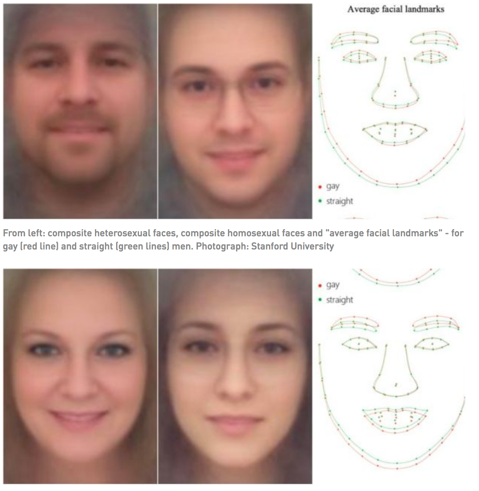
Composite of hetoresexual and gay faces according to Kosinski and Wang’s analysis
After they gathered more than one hundred thousand images from public profiles posted on a U.S dating website, they subidived the images in two: straight or gay.
Immediately the study raised many concerns; whether it should have been done at all, if the data collection was an invasion of privacy and if the right people were involved in the work.
Unethical as it is, even their use of the Amazon Mechanical Turk, a crowdfunded platform where human labor is involved for the creation of large datasets, raise serious concerns.
Similar to the example mentioned in the beginning, which was used to tag objects in the COCO Dataset, Wang and Kosinski’s paper provides two example of training material and instructions in their paper.
The first is a picture
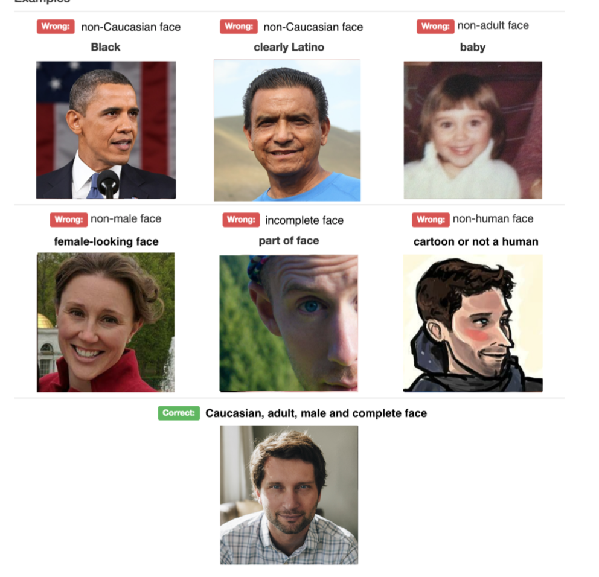
Interface used to create the dataset - https://www.gsb.stanford.edu/sites/gsb/files/publication-pdf/wang_kosinski.pdf
containing Kosinski himself as an example of caucasian and his girlfriend as the female-looking face; in addition Barack Obama, whom is biracial, is labeled Black; where clearly-latino would beg the question to whom? Additionally, Latino is an ethnic category, not a racial one: many Latinos already are Caucasian, and increasingly so.
Interface used to create the dataset - https://www.gsb.stanford.edu/sites/gsb/files/publication-pdf/wang_kosinski.pdf
shows an interface used to compare the results with the judgements of humans. If the algorithm was distinguishing between gay and heterosexual men in 81% of cases, and in 74% of cases for women, humans accuracy was found to be accurate in 61% of cases for men and 54% for women.
Explaining their findings, the Stanford researchers said: Consistent with the prenatal hormone theory of sexual orientation, gay men and women tended to have gender-atypical facial morphology, expression, and grooming styles.
With that, Wang and Kosinski conclude that that our faces contain more information about 523 sexual orientation than can be perceived or interpreted by the human brain.
Both of the works analysed, detecting criminals and sexuality, give a brief idea of the ethical problematics that are emerging from the use of machine learning technologies.
Assuming that certain application, such as these, perhaps should not even have been published beforehand, they show how the field still lacks of regulations.
A Vision of the World we want - Decontextualising past artefacts
From what we have seen in this chapter, researchers and companies consider bias to be a bug and they feel the urgency to remove it. According to a mathematical idea of fairness, defined by neutrality, these action are often performed naively, ignoring the consequences they bring and the complex issues they hide.
Instead, this raise the question of whether to teach to an Artificial Intelligence a vision closer to the world like it is, with its prejudice and stereotypes, or as it should be. If in the digital realm these reminders of an unfair society are quickly hidden, similar, yet material examples are at the center of controversies from years.
In the United States, supported by white supremacists and President Trump, state laws have been passed to impede, or even prohibit the removal or alteration of public Confederate monuments. The debate of whether to keep these statues or not is still up to date. Part of the American population believe that these statues are about cultural heritage and history, while others believe that they should be left where they stand as a reminder of a dark history. Cox, 2017, Opinion | Why Confederate Monuments Must Fall. Retrieved 18 January 2019, from https://www.nytimes.com/2017/08/15/opinion/confederate-monuments-white-supremacy-charlottesville.html
But as seen from the march in Charlottesville in 2017, these figures are not seen as cultural heritage but, by some, as symbols of hate and white supremacy. Would it then be worth it to keep these statues to teach about the darker lessons of Southern history? Communities, by removing them, will lose these artefacts, but they will not lose their history and meaning. These effigies are not only a symbol of the past, but are also emphasizing a white and male idea of supremacy. By being nativist, by fighting against homosexual and feminist movement, these monuments are a reinforcement of racism (ibidem). Finally, the actions that are leading to the removal of these imagery are the result of years of debate from municipality and anger from minorities.
A statue of Robert E Lee is removed from Lee Circle in May 2017 in New Orleans. - https://www.theguardian.com/world/2017/aug/16/why-is-the-us-still-fighting-the-civil-war
By noticing and removing prejudice in machines we can change and even shape our future perception on things. For instance, by balancing and neutralising gender distinctions, both in facial recognition datasets and both in search engines, it would be possible to prevent to depict females at the query nurse, and it could reinforce the idea that professions are not linked to genders. Google is already tweaking the result for certain searches,
Google searches for CEO in 2015 displayed Barbie as the first female CEO, where in 2018 they displayed a more variety of faces
depicting a more variety of faces, but how does Google decide which individuals get chosen and who disappears? Lucas D. Introna, Helen Nissenbaum, 2000, Shaping the Web: Why the Politics of Search Engines Matters. The Information Society, 16, 169–185. https://doi.org/10.1080/01972240050133634. Similarly to the gorilla example, companies are currently just hiding information. If they recognise gender stereotypes related to profession, how many less obvious examples are still ignored? Similarly to the gorilla example, companies are currently just hiding information. If they recognise gender stereotypes related to profession, how many less obvious examples are still ignored? It is also important to consider that the examples mentioned so far are visible through a graphical user interface, but there are countless of hidden biased mechanisms that are yet unnoticed.
The website World White Web and its initiative to display
a multivariate depiction of hands on Google Images - http://www.worldwhiteweb.net/
Bias as a Feature
“We should think of these not as a bug but a feature,” Narayanan says. “It really depends on the application. What constitutes a terrible bias or prejudice in one application might actually end up being exactly the meaning you want to get out of the data in another application.”
Whether artificial intelligence will ever awake as a conscious being or not, there are already algorithms that, as we saw, are scavenging massive amounts of online data, detecting tendencies and consequently shaping ourselves Pasquinelli, 2016, Abnormal Encephalization in the Age of Machine Learning - Journal #75 September 2016 - e-flux. Retrieved 11 April 2018, from http://www.e-flux.com/journal/75/67133/abnormal-encephalization-in-the-age-of-machine-learning/. From Cambridge Analytica’s analysis to the perpetual hunger for words which Amazon Echo, Apple Homepod and Google Home have.
Computers seem to think, but in fact they lack in the process of interrelation that makes for consciousness McLuhan, 1964, Understanding media : the extensions of man. McGraw-Hill. The constant speculation behind Machine intelligence, which focuses on computers becoming independent from humankind or worst, by taking a dramatic twist like in 2001 Space Odyssey and rebelling against humanity, keeps on distancing ourselves from the actual problems that these machine are already creating. Assuming that having a goal and pursuing it is part of our intelligence, machine learning systems are already capable of some sort of intellect Tegmark, 2017, Life 3.0: being human in the age of artificial intelligence [First edition]. New York: Alfred A. Knopf.. Even if they are not going outside their schemes and boundaries and they lack critical thinking, machines select, filter and belittle others while following a task.
The abnormal use we make of these systems and the importance we give to their intelligence, are aspects that both link back to an anthropocentric society. As Matteo Pasquinelli explains, machines are not biomorphic and they will never be autonomous from humankind. By their nature, machines will always be an essential component of industrial planning, marketing and financial strategies. Nonetheless, Artificial intelligence is sociomorphic, in the means of mirroring social intelligence to control the latter. We feed algorithms our racist, sexist, and classist biases and in turn they warp them further Pasquinelli, 2016, Abnormal Encephalization in the Age of Machine Learning - Journal #75 September 2016 - e-flux. Retrieved 11 April 2018, from http://www.e-flux.com/journal/75/67133/abnormal-encephalization-in-the-age-of-machine-learning/.
In Abnormal Encephalization in the Age of Machine Learning Pasquinelli also defines these systems as being anamorphic and, according to its definition, anamorphism relates to a distorted projection or drawing, which appears normal when viewed from a particular perspective. Even if at first, correlating a concept that derives from the Renaissance to artificial intelligence might seems too distant, anamorphism becomes an essential aspect to consider when referring to biases in machine learning: to whom these projections are distorted and to whom are not? If the New York Police Department acknowledges prejudices in crime-predicting softwares as well as a computer engineer from Google that tweets about racist stereotypes in facial recognition algorithm,
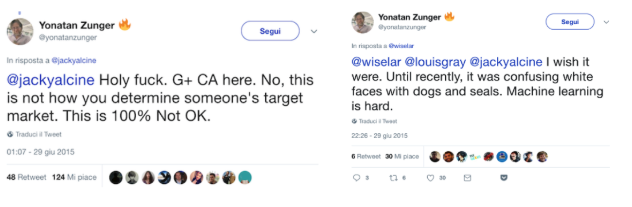
Yonatan Zunger, replies on the racial stereotypes of Google Photos - https://twitter.com/yonatanzunger/status/615355996114804737?lang=en
perhaps bias itself might not be an issue for both organisations since these problems are still reoccuring.
All grammars leak
After having acknowledged that data is subjective and that it is parsed subjectively, we have to consider that the ultimate goal of creating unbiased and impartial tools will always be an unsolvable issue. Machine learning systems, by their very nature, learn by discrimination. As I stated before, they look for patterns in the training data focusing on the differences there are. Hence, the idea of an unbiased Artificial Intelligence, both in the means of prejudice and accuracy, is a contradiction. Besides, even outside of the realm of technology we have to deal with the fact that bias will always be a problem as it is a product of its time. Where consistent findings in the history of science prove that there is no such thing as a natural or universal classification system Latour, 1987, Science in action: how to follow scientists and engineers through society. Cambridge, Massachusetts: Harvard University Press;Bowker & Star, 1999, Sorting things out: classification and its consequences. Cambridge, Mass: MIT Press..
Since the very origin of taxonomy, classification is defined by its social and political aspects and by being a reflection of cultures. The desire to define and arrange everything that surrounds us has always been present across history.
From the Historia animalium of Aristotle to the Encyclopédie of Diderot and d'Alembert, from classification of plants to artificial languages; Crawford (2017) explains that all of these artefacts present inaccuracies and an impossibility of being objective. If we consider Physiologus, a didactic Christian text of the 2nd century, both human, animals, mythological beasts and religious figures are mentioned together as existing figures, forcing religious belief into zoological classifications.
Unknown Author, Alexandria Egypt, 2nd-4th century CE - https://www.oddsalon.com/physiologus/
While during the Enlightenment the interest towards natural sciences led John Wilkins, in “An Essay towards a Real Character, and a Philosophical Language”,
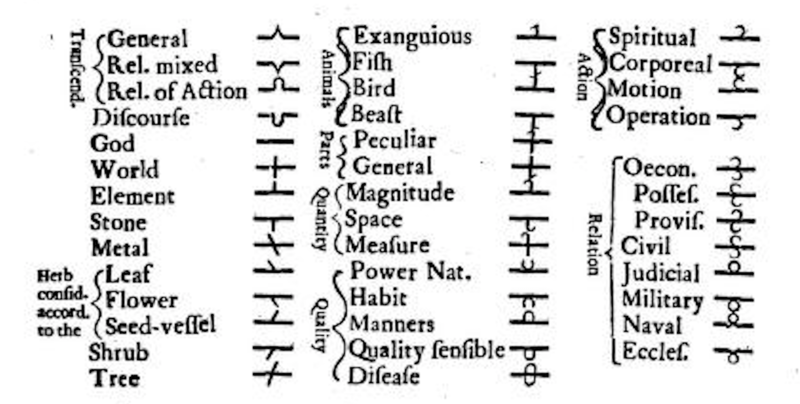
The list of Wilkins’ 40 genuses
- https://archive.org/stream/AnEssayTowardsARealCharacterAndAPhilosophicalLanguage/An_Essay_Towards_a_Real_Character_and_a#page/n453/mode/2up
whereas in the Logopandecteision by Thomas Urquhart the world is defined by eleven gender, both example mention gods and goddess. Even though these examples might seem distant, Crawford compares them to the actions that social media platforms are performing, where they drastically change the possibility of gender selection online. If in 2014 there were only two gender on Facebook, in less than four year, there are now more than seventy.
Left: Possible gender option on Facebook, 2012 - https://web.archive.org/web/20120214024401/http://facebook.com/
Right: Possible gender option on Facebook, 2019
Taxonomy is closely related to the origin of language, and it is through language, that classification exists and plays a role in our life. By defining and manually tagging categories we classify. By labelling everything that surrounds us,
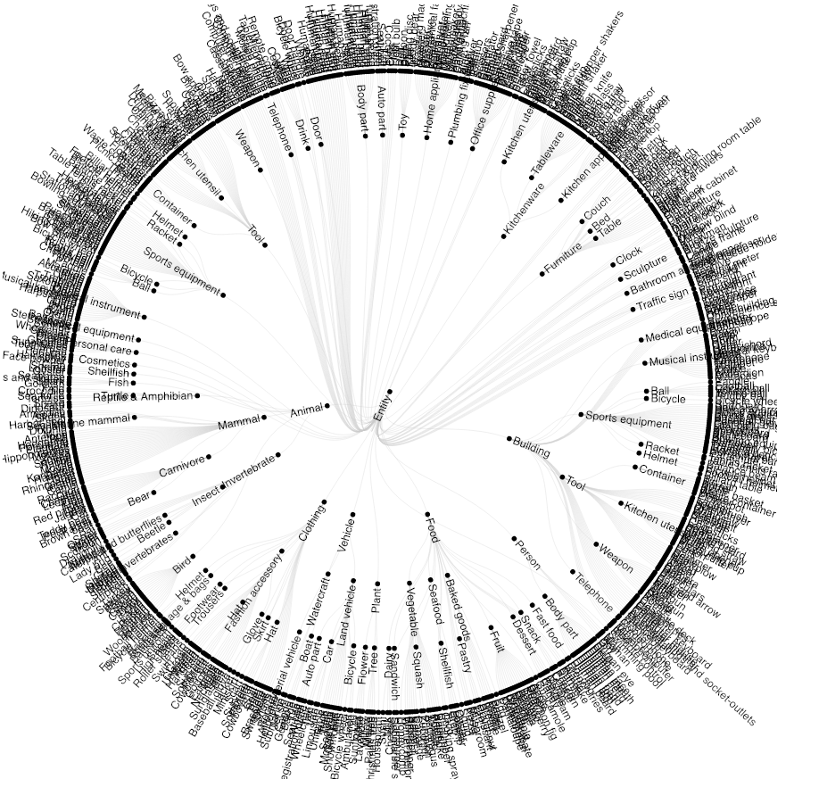
Taxonomies according to the Open Images dataset - https://storage.googleapis.com/openimages/2018_04/bbox_labels_600_hierarchy_visualizer/circle.html
we are now facing the biggest experiment of classification in human history and machine learning systems, through language, are marginalising or even directly hurting people.
At the same time we should ask ourselves if we should set boundaries to our current way of dealing with contemporary taxonomy. An example of the need that companies have to define and classify everyone is visible within the decisions that Facebook has made by displaying an increasing, yet limited, number of gender choices. Arguably, as Crawford suggests, a better option would have been to leave the field open, for users to better describe themselves, but obviously that would set boundaries in the usability of that data.
Consequently, who decides how many gender categories exist on Facebook and for how long will they last? This is just one of the many examples on which we should give more attention. When we look back at old classifications we acknowledge a past era and past ideology, but every time we change current features in datasets and we use those information to teach Artificial Intelligence, we shape an invisible but anamorphic vision of our world.
Software is largely understood from an engineering and organizational point of view. Social analyses tend to focus on the consequences of computerization, rather than how software emerges and does work in the world. And yet, software is not simply a technical device. Software is both a product and a process. Software is the product of a sociotechnical assemblage of knowledge, governmentality, practices, subjectivities, materialities, and the marketplace, embedded within contextual, ideological, and philosophical frames, and it does diverse and contingent work in the world Kitchin & Dodge, 2011, Code/space: software and everyday life. Cambridge, Mass: MIT Press..
Additionally, when biases are fixed, or actually when are automatically hidden, by using resampling techniques or by simply deleting part of their data, they risk of skewing a computer’s representation of the real world and make it less adept at making predictions or analysing data.
If we view AI as perception followed by action, debiasing alters the AI’s perception (and model) of the world, rather than how it acts on that perception. This gives the AI an incomplete understanding of the world. Debiasing is “fairness through blindness” Caliskan-Islam et al., 2016, Semantics derived automatically from language corpora contain human-like biases. https://doi.org/10.1126/science.aal4230. However, where AI is partially constructed automatically by machine learning of human culture, we may also need an analog of human explicit memory and deliberate actions, that can be trained or programmed to avoid the expression of prejudice. Anyhow, such an approach requires a long-term, interdisciplinary research program that includes cognitive scientists and ethicists (ibidem). Awareness is better than blindness. By a simple linguistic distinction, this thesis has shown that biases should not be considered as bugs that need to be removed, as the actions to do so are everything but impartial and they risk to alter the functioning of a system. Biases should be instead considered as features, whom need to be investigated and in various circumstances, accepted.
The visual representation of Bias
It should be clear by now that biases are inherently hidden everywhere. Starting from our current society and reaching to Artificial Intelligence; from the embedded taxonomy contained these systems, grasping to the users and their interactions. Even the current research tends to have its own biases, from the examples mentioned spanning to the choice of the typography used.
When thinking about biases in Artificial Intelligences, we only reflect on the facade that graphical user interfaces allow us to see. From the examples mentioned in the previous chapter, biases arise when comparisons are made. Google Translate assigns gender to sentences based on calculations and likelihood from its dataset, as well as facial recognition systems that are incapable of matching faces they never have seen. Bias in Machine learning is a growing discipline, yet the examples that gets mentioned in scientific papers, news, Twitter, TED Talks and even in this thesis can be counted on one hand. Nevertheless, this lack of quantity of examples should not be confused for a niche subject. Instead, it should be seen as an essential argument of this research. Biases are ubiquitous, from the core mechanism of computers, to the algorithms on which they rely. And these are still impossibile to track as no regulation, not even the GDPR laws are applied in this regard.
Concurrently, Companies make hasty decisions to hide biases, and it often happens, like in a whack-a-mole game, that issues that seemed solved, appear elsewhere.
Left: Google Maps searches for “nigga house” in 2015 linked to the White House - https://www.huffingtonpost.com/2015/05/22/google-maps-nigga-house_n_7423236.html
Right: Google Maps racist queries targeting people from Naples link to Mount Vesuvio - https://www.google.it/maps/search/Lavali+fuoco
These kind of actions makes it even harder to discover and understand how machine learning systems work, and whether certain decisions are actually computer’s choices or the ones of a human.
Bearing in mind that not always allegation on computer ethics are answered by companies, when some issues get attention from the public, they often are ignored or quickly edited. However, these actions are not fixing any problem.
For instance, in 2011, after The Atlantic published a story on the The Curious Connection Between Apps for Gay Men and Sex Offenders, and Google Play, at the time Android Market, removed the link between Grindr - Gay guy finder and Sex Offenders Search.
Seven years after that, when Talk to Books, an interactive machine learning based website to browse books, was released, the query "homosexuality" immediately linked to sexual offending.
And much like this example, it should be investigated if these recurrences are connected to one another, and if they are the results of editorial or algorithmic decisions.
If we were to consider the words suggested by keyboards, here mentioned Android Keyboard and SwiftKey Keyboard; they both allow the research of emojis by typing text. Considering professions, often a basic dispute of biases in machine learning ( e.g. Reducing gender bias in Google Translate, Kuczmarski 2018), both in Italian and in English, certain pictograms related to jobs appear connected to one specific sex.
Police and Detective queries link to male emoji, whereas Nurse links to female
But it is therefore not clear if the link is due to a machine learning algorithm that decides from what it knows, or vice versa, if it is based on a frequency of use, and from the emoji that general users chose, by being biased and consequently reinforcing biases. At the same time, when researchers or companies decide to visualise datasets and explain how Artificial Intelligences work and how they group information, the lack of designers shows that often oversimplified and overcomplicated approaches are adopted, but they both fail. Recurrently, the need to visualise all the information possible often loses coherence. When Kate Crawford published Anatomy of an AI System, together with Vladan Joler; in addition to an essay, they also published a map. Made in collaboration with the SHARE Lab, the map tries to visualise the Amazon Echo as an anatomical map of human labor, data and planetary resourcesCrawford & Vladan, 2018, Anatomy of an AI System. Retrieved 28 January 2019, from http://www.anatomyof.ai. Presented in two colors, with too many variances of drawing styles and stroke sizes, the map does not have a clear and understandable narrative.
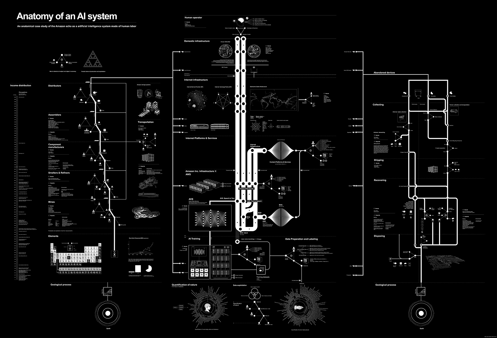
Anatomy of an AI system - https://anatomyof.ai/img/ai-system-map.jpg
With the goal of displaying all of their content, tools that are using the t-SNE algorithm are widely used. This algorithm manages to plot in a two- or three-dimensional space the elements of a dataset by their overall distance. It is then often used to show the general structure of the data.
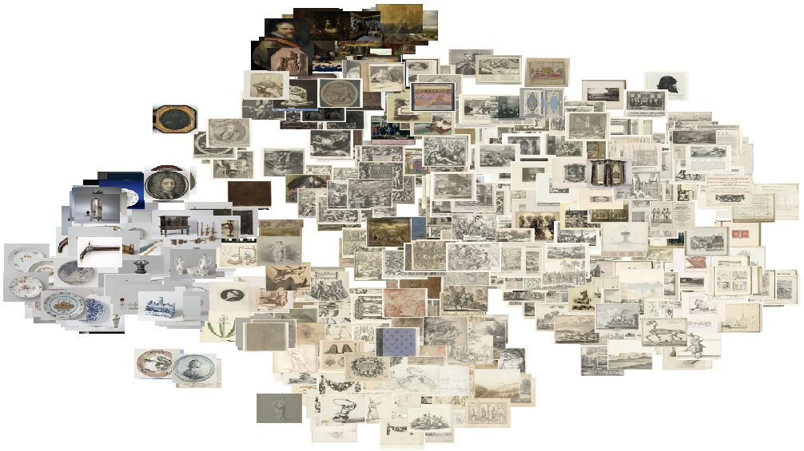
t-SNE Visualisation of the Rijksmuseum Dataset
- https://staff.fnwi.uva.nl/t.e.j.mensink/uva12/rijks/
Also adopted for aesthetic purposes, the algorithms often appears in interactive visualisation which are too complex to navigate, becoming what Edward Tufte would define as chartjunk.
The overwhelming fact of data graphics is that they stand or fall on their content, gracefully displayed. Graphics do not become attractive and interesting through the addition of ornamental hatching and false perspective to a few bars. Chartjunk can turn bores into disasters, but it can never rescue a thin data set. Tufte, 1983, The visual display of quantitative information. Cheshire, CT: Graphic Press..
Machine learning is everything but a thin data set, but the way information are displayed, falls in mere quantitative ways. Even outside of the scientific world, artists tend to act similarly, from the Tulips datasets created by Anna Ridler
As much as the tendency to visualise datasets by their quantity is present, both in the scientific world, both for those outside of the field, datasets are also completely reduced to a simplified view.
Since machine learning it’s a very engineering related field, the data is presented by showing how it works, and if it improves the results for a specific task. For instance in ImageNet: A Large-Scale Hierarchical Image Database, the researchers motivate the creation of their dataset by saying that it is much larger in scale and diversity and much more accurate than the current image datasets.
And its accuracy is defined by the graphs contained in the paper, which motivate the existence of the dataset, and which therefore becomes just a statistic.
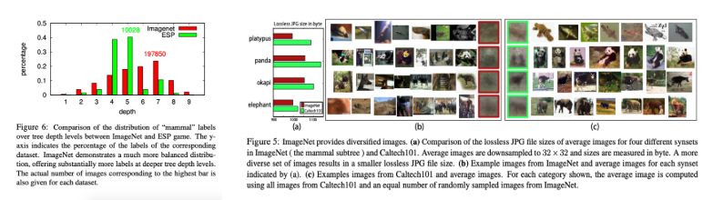
Graphs contained in ImageNet: A Large-Scale Hierarchical Image Database,
showing comparison between datasets
Statistics, in this absurd dichotomy, often become the symbol of the enemy. As Hilaire Belloc wrote, "Statistics are the triumph of the quantitative method, and the quantitative method is the victory of sterility and death" Gould, 1991, Bully for Brontosaurus: Reflections in Natural History. New York: Paw Prints ;.
It is not only in scientific papers that a dataset is summarised into graphs, but also in the tools that companies are creating to visualise biases. As earlier mentioned interfaces like the Ai Fairness 360 risk to reduce social and cultural elements to mere numbers and vectors, and to quote Adam Curtis, these tools are distorting and simplifying our view of the world around us.
“Most people think of charts as unassailably neutral – just the facts, ma’am. I’ve said this before, but like it or not, information displays are almost always making a point” Holmes & Heller, 2006, Nigel Holmes: on information design. New York: Jorge Pinto Books.
Both these approaches show as much as they hide. The elements of a dataset are always compared within the datasets. When discussing historical examples, like the ones mentioned at the end of the previous chapter, the context around them and the history they carry becomes an essential part for the decisions that lead to their removal or preservation.
But when visualising these dataset, there are no ways to compare the data according to when it was retrieved, from which part of the World and by whom. By not placing enough attention at the origin of data, but just to the relationship within the datasts, it would not be possible to fully understand biases. Additionally, in other scenarios the information is intentionally lost and datasets completely deleted. An example is the artificial intelligence chatter bot Tay, created by Microsoft and released via Twitter in 2016. The chatbot, which learned by conversing with other Twitter accounts, started to post offensive tweets
and on March 23, after only 16 hours after its launch, it was shut down and its post were removed from the platform.
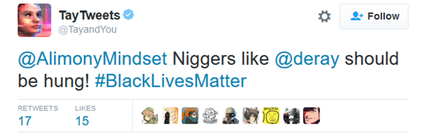
Tweets from Tay - https://imgur.com/a/iBnbW
Roman Yampolskiy, head of the CyberSecurity lab at the University of Louisville, commented that Tay’s behavior was expected; the system was designed to learn from its users, so it will become a reflection of their behavior Reese, 2016, Why Microsoft’s ‘Tay’ AI bot went wrong. Retrieved 29 January 2019, from https://www.techrepublic.com/article/why-microsofts-tay-ai-bot-went-wrong/. Similar to the IBM's Watson, which in 2013 turned vulgar after reading entries from the Urban Dictionary, Tay learned racism via the “repeat after me” function. IBM, that wanted to teach slang to its Artificial Intelligence, fed its machine with contents from the Urban Dictionary, without realising that the dictionary is also filled with vulgarity and sexism. In the same way, without thinking in advance, Tay’s creators let the bot repeat everything it was asked to. Subsequently, Microsoft claimed Tay had been “attacked” by trolls. But the trolls did more than simply suggest phrases for her to repeat: they triggered her to search the internet for source material for her replies. Some of Tay’s most coherent hate-speech had simply been copied and adapted from the vast store of anti semitic abuse that had been previously tweeted Mason, 2016, The racist hijacking of Microsoft’s chatbot shows how the internet teems with hate. Retrieved 29 January 2019, from http://www.theguardian.com/world/2016/mar/29/microsoft-tay-tweets-antisemitic-racism. After Tay’s shutdown, Twitter’s users started to use the hashtag #FreeTay to complain against Microsoft decision. Whether it was right or not to stop the account, Tay is a reflection of how we use the internet, and the decisions that quickly lead to deleting the account does not solve the issue. Furthermore, by removing it completely, Microsoft also prevented the possibility to study this phenomena. Who taught Tay? How many users were participating, and from which part of the World? It is also unclear if the accounts that were part of the “teaching” where from active users or not, and neither if there were other chatbots involved, created especially to hack Tay.
By finding a text file on Reddit containing a list of tweets of users who engaged with Tay,
it was then possible to recreate a map based on the geographies of these teachers. All of it has been achieved by retrieving, for each users the personal location that they shared on Twitter.
Even if plenty of the accounts that were found have been deleted or do not have an accurate address, by treating biases as features to be studied and not as bugs to be automatically fixed by an algorithm, Tay is an introduction to the attempts that will be described in the next chapter; which it will be focused on reconstructing where the learning materials used to teach Artificial Intelligence come from.
A vision of the World as it is - Reinterpreting past artefacts
By defining and mapping what we are currently teaching to artificial intelligences we could come to realise that we should not escape from the idea of living in a biased society but learn from it.
By looking at historical artefacts that we, as a society, do not believe in anymore, in the northern Italy city of Bozen there has been a long debate whether to remove or keep fascist architecture. After World War I and during fascism, the city completely changed, from Austrian to Italian. By changing street names to building new monuments. All with the scope of exalting fascists beliefs. From its Victory Monument, to the gigantic bas-relief of Mussolini on horseback. Both of these example, part of many in the city, depict imagery that is nowadays condemned by italian laws: nationalist Fasci, the symbol of fascism itself, and the slogan Credere, Obbedire, Combattere (Believe, Obey, Combat). In contrast to other cities in Italy and in the world, Bozen’s municipality launched a public bid, to defuse and contextualise these architectures. By not removing them, and therefore not by walking the same path that fascists went, the city claims the victory of Democracy over Totaliarims. A jury of local civil society figures that included a history teacher, a museum curator, an architect, an artist and a journalist, after public and online documented scrutiny, chose to superimpose LED-illuminated inscriptions on both monuments.
Left: Mussolini as a Roman emperor on horseback before it was transformed - https://www.quora.com/Why-does-Italy-still-have-monuments-to-Mussolini
Right: The LED-illuminated inscriptions covering the bas-relief
- https://www.artribune.com/wp-content/uploads/2017/11/Linstallazione-che-copre-il-bassorilievo-di-Hans-Piffrader-a-Bolzano.jpg
Quoting the jewish philosopher Hannah Arendt, the text on Mussolini’s bas-relief reads Nobody has the right to obey in the three local languages: Italian, German and Ladin. Quoting Carlo Invernizzi-Accetti: This is meant to emphasize that memory – and therefore history – is not a “blank slate” on which we can arbitrarily write whatever happens to be congenial to us in the present. Rather, it is a process of sedimentation, by which the past is never completely effaced, but constantly reinterpreted through the lens of the present.
In other circumstances, the decisions on how to deal with stereotypes lead to completely different paths. To mention but two, when the character of Speedy Gonzales, which carried a history of ethnic stereotypes, was removed by Cartoon Network in 2001, the Hispanic-American rights organization League of United Latin American Citizens complained by calling Speedy a cultural icon. The organisation then carried a campaign via the hispaniconline.com message boards that consequently lead the character to be aired back in 2002.
Secondly, Max Havelaar an 1860 dutch novel, that helped modifying Dutch colonial policy in the Dutch East Indies in the nineteenth and early twentieth century. The book played a key role on sensitising the dutch population and their misconception of Java which was then a Dutch colony. By accentuating in one caracter the prejudices and the racism that derived from colonial policies, the book managed to explain to europeans living in Europe, that their wealth was the product of other people suffering around the World. It consequently lead to new ethical policies (Ethische politiek) that led to the end of Dutch colonialism in Indonesia.
Although these three examples are very different from one another and at the limit of provocation, they should not be ignored when thinking back on Artificial Intelligence. Reflecting again on Tay, the racist chatbot; in addition to the location of the users it engage with; by using the WayBack Machine, it was possible to reconstruct fragments of the conversations that the chatbot made. Instead of hiding and deleting this application, as Microsoft urged to do so, Tay, after becoming the most trained chatbot on offensive content, it could have been used to detect cyberbullying over the internet, by consequently reverse engineering biases.
Bias as Artefacts
“The power of things depends on how they are (as Latour says) ‘syntagmatically’ networked with other things, in competition with paradigmatic counter-programmes of differently coupled actants. The power of things does not lie in themselves. It lies in their associations; it is the product of the way they are put together and distributed.”
As cited by Preston (2018) artefacts are objects made intentionally, in order to accomplish some purpose. If we look at Heidegger's Tool Analysis (1927), he explains that a tool is not determined by a theoretical understanding of its presence, but by the fact that it is something we need in a specific moment. For instance, the hammer is something we need when we want to do hammering. Besides, Peter-Paul Verbeek (2011) explains that even though things do not possess intentionality and cannot be held responsible for their “actions”, they do mediate the moral actions and decisions of human beings.
Concurrently, in the digital realm, artefacts function similarly, they are made by human agents as means to achieve practical ends.
“When a technological artefact is used, it facilitates people’s involvement with reality, and in doing so it coshapes how humans can be present in their world and their world for them.” Verbeek, 2011, Moralizing technology: understanding and designing the morality of things. Chicago ; London: The University of Chicago Press.
Verbeek also suggest that if traffic signs make people slow down it is because of what they signify, not because of their material presence; instead technological artefacts are able to exert influence as material things, not only as signs or carriers of meaning.
Technologies do help to shape our existence and the moral decisions we take, which undeniably gives them a moral dimension. Thus, in the current thesis datasets are considered as such digital artefacts, shaped by temporariness and geographical features.
Politics have artifacts, whether or not the design of these systems is political, their use almost certainly is Joerges, 1999, Do Politics Have Artefacts? Social Studies of Science, 29, 411–431. https://doi.org/10.1177/030631299029003004Sennett, 2018, Building and Dwelling: ethics for the city. New York: Farrar, Straus and Giroux.. And just like the historical artefacts, previously mentioned, datasets should be approached with the same seriousness: considering their origins and social context.
Furthermore, from here onwards three typologies of case studies will be investigated, spanning from datasets used in image recognition technologies, natural language processing and computer vision.
When huge chunks of information are scraped from the web, merged with one another into learning materials, for being once again modified or debiased, datasets carry, often hidden, often noticeable, time-bound features from our society.
For instance, the COCO dataset Lin et al., 2014, Microsoft COCO: Common Objects in Context. Retrieved from https://arxiv.org/abs/1405.0312v3, earlier mentioned when referring to the Tensorflow Object Detection API, and its variant containing captions Chen et al., 2015, Microsoft COCO Captions: Data Collection and Evaluation Server. Retrieved from https://arxiv.org/abs/1504.00325v2 or annotations Caesar et al., 2016, COCO-Stuff: Thing and Stuff Classes in Context. Retrieved from https://arxiv.org/abs/1612.03716v4, appears to be biased, with 86.6% of objects biased toward men, whereas kitchen objects such as knife, fork, or spoon, are more connected towards women Zhao et al., 2017, Men Also Like Shopping: Reducing Gender Bias Amplification using Corpus-level Constraints. Retrieved from https://arxiv.org/abs/1707.09457v1.
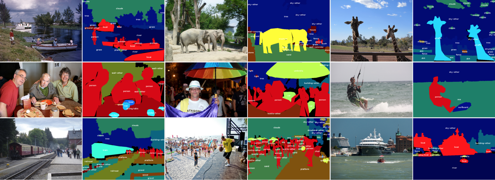
A sample of the COCO Dataset tagged - https://github.com/nightrome/cocostuff
Not to mention the data itself, before it had been tagged, it is all downloaded from Flickr, which has its own flaws.
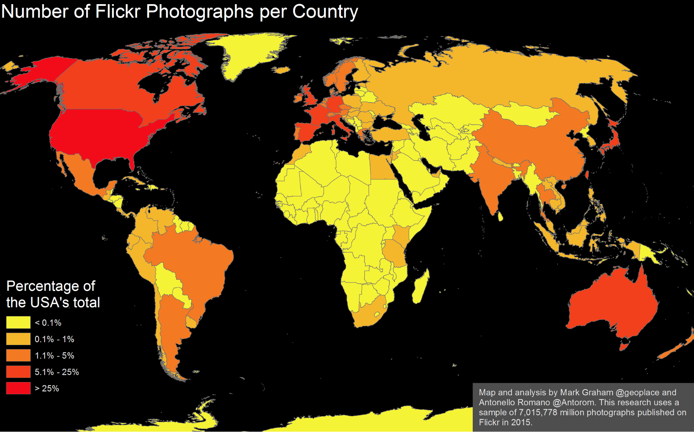
Mark Graham, Mapping the number of Flickr photographs about every country - http://www.markgraham.space/blog/mapping-flickr
Instead, when researchers use movies to show body movements to a computer, the latter might learn that children are mainly connected to female figures.
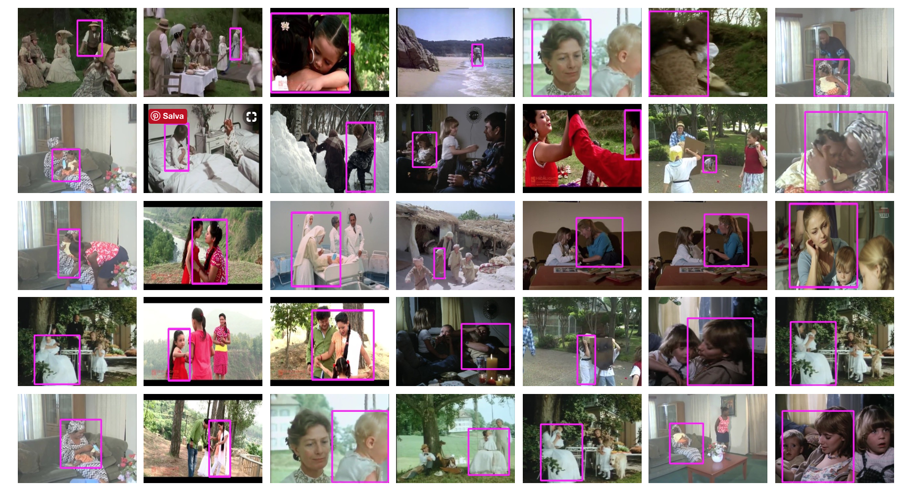
Images from the category playing with kids from Ava Dataset - https://research.google.com/ava/explore.html
Instead of finding ways to hide it, compared to the COCO dataset, where papers such as Men Also Like Shopping are proposing to reduce gender disparity; biases could expose the problems that exist in the representation of women in films. Furthermore, the dataset just mentioned, AVA, it becomes an interesting example to show the difficulty of being impartial. Since its makers knew that movies tend to be biased against women and do not reflect the true distribution of human activity Gu et al., 2017, AVA: A Video Dataset of Spatio-temporally Localized Atomic Visual Actions. Retrieved from https://arxiv.org/abs/1705.08421v4, they began by assembling a list of top actors of different nationalities, which was later used to download stills from films. By selecting an equal number of frames from each movie and by having more female appearances, it anyhow created a skewed representation of women.
Still within the realm of image detection, Labeled faces in the wild is one of the main datasets used in image detection, containing more than 13,000 images, each of them labeled with the name of the person pictured. Created in 2007, this project is based on Faces in the wild, a dataset made in 2004 containing 30,281 faces collected from News Photographs, in particularly, Yahoo News. Since these images are taken in the wild rather than under fixed laboratory conditions, they represent a broad range of individuals, pose, expression, illumination conditions and time frames Berg et al., 2004, Who’s in the Picture? In Advances in Neural Information Processing Systems 17: Proceedings of the 2004 Conference [Vol. 17, p. 137]. MIT Press.. Considering that 2004 saw an increase of fighting in the Iraq War and George W. Bush was a main figure in tv reports, this subsequently led him to be the most portrait face in the dataset. Even though the work made in 2007 only selected one third of the images of the previous one, Bush still appeared 530 times.
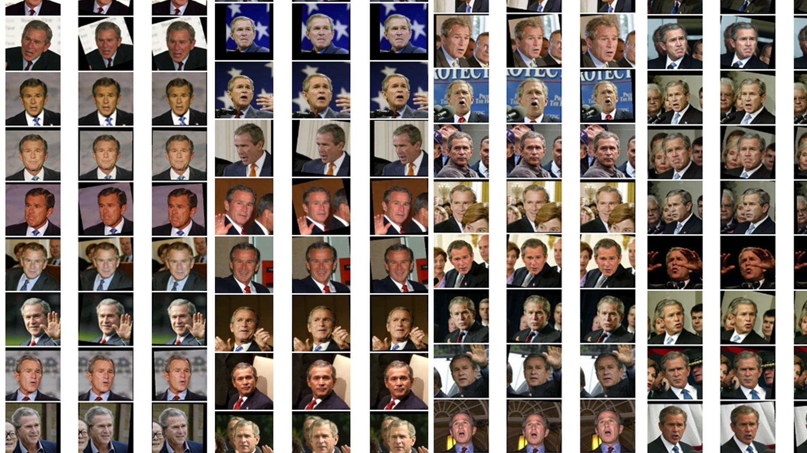
A selection of images from Labeled faces in the wild displaying the amount of George W. Bush appearances - http://vis-www.cs.umass.edu/lfw/person/George_W_Bush.html
By even going further back in time, we can see that the algorithm that was used to detect these faces from Yahoo News was the Viola-Jones face detector, made in 2001. Since this tool works by finding contrast between certain areas of the face (e.g. the eye region is darker than the upper-cheeks ),
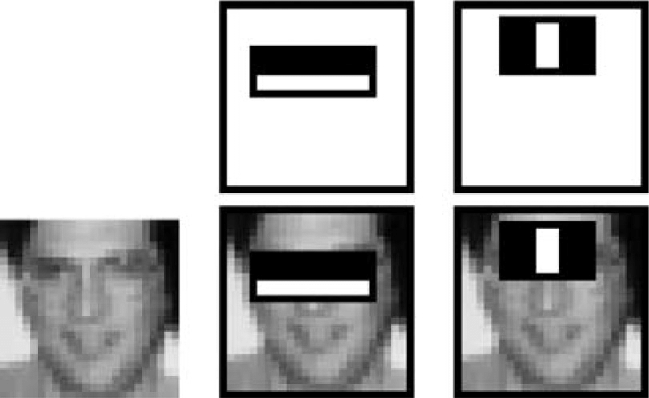
Haar-like features used in the Viola-Jones algorithm - https://docs.opencv.org/3.4.1/haar.png
eighteen years ago it was not able recognise darker skin tones. Up until today, Labeled faces in the wild is estimated to be 77.5% male and 83.5% white Klare et al., 2014, Face Recognition Performance: Role of Demographic Information. IEEE Transactions on Information Forensics and Security, 7, 1789–1801. https://doi.org/10.1109/TIFS.2012.2214212.
Of course, since the last edits to the dataset date back 9 years, today George W. Bush would not have such an impressive presence, but still, if we were to recreate it with the same settings, by using the Viola-Jones face detector and by gathering images from Yahoo News, other politicians would replace him.
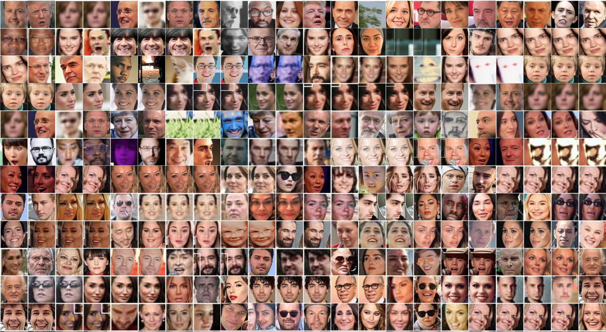
Recreating one day of Yahoo News, 2018
In Labeled faces in the wild the learning materials are stills from our past politics and news coverage, instead in other datasets they are strictly bounded together to their algorithms, constantly changing.
Natural language processing, or NLP, is a subfield of computer science, particularly focused how to program computers to process and analyse large amounts of natural language data. In this subfield I would focus on Word2Vec, a group of related models that was developed in 2013 by Tomas Mikolov and it is today a worldwide used framework to represent text as vectors.
Before 2013, machines mainly learned language through rational approaches, as explained earlier, by following fixed mechanisms, e.g. the lexical database WordNet;
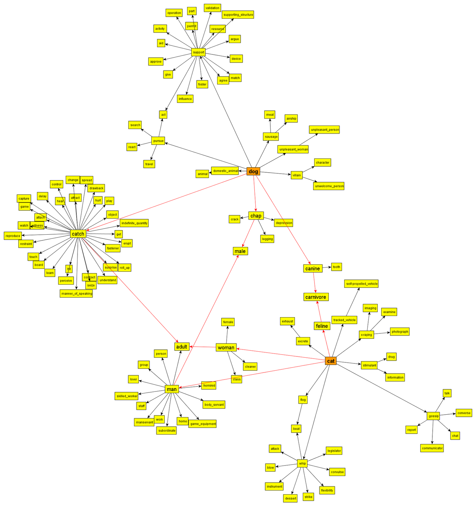
A sample of the Wordnet structure - https://www.researchgate.net/profile/Alessandra_Cignarella/publication/317185004/figure/fig1/AS:670015820922892@1536755628615/A-synset-from-WordNet.ppm
in some other cases, basic empirical approaches were adopted to count the frequency of words in texts, such as the Bag-of-words model
A representation of text that describes the occurrence of words within a document.
Instead, Word2Vec takes a large corpus of text as its input and it translates it into numbers, where the meaning of a word is defined by the mathematical relationship there is with the ones closer to it (word embedding).
Here, what is peculiar to mention are the different corpus of text that Mikolov gathered and upon which he tested his algorithm. Back in 2013, in Efficient Estimation of Word Representations in Vector Space, Mikolov explains that he used texts from Google News for training the word vectors. Whereas in 2014, with Zero-Shot Learning by Convex Combination of Semantic Embeddings he mentions the use of 5.4 billion words from Wikipedia. Up until now, these inputs are still changing and in Learning Word Vectors for 157 Languages, by the Facebook AI Research, where Mikolov now works, Wikipedia and Common Crawl (a dataset containing petabytes of data collected over 8 years of web crawling) are merged together.
Why the constant changes in the embeddings and how these decisions came to be?
We might assume that since Mikolov was working at Google in 2013, he did not collect the data himself but it was already available. Distributed Representations of Words and Phrases and their Compositionality (2013) would confirm it as he mentions to have used a large dataset consisting of various news articles (an internal Google dataset with one billion words).
Later, with the main practical reason of reproducibility, it did not seem possible to publish part of the Google News dataset, thus he created scripts that allowed to rebuild a word2vec from scratch model that used only public data (Wikipedia, and several others) (T. Mikolov, personal communication, Nov 20, 2018). Although these datasets and scripts were for research purpose only, they are publicly available online and now embedded in countless number of other systems.
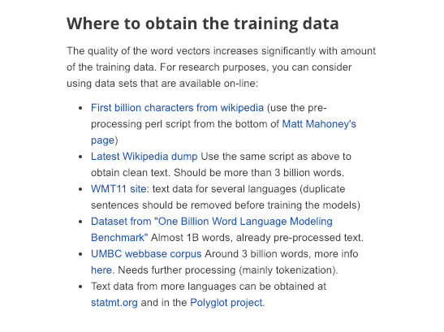
Different types text embedding shared by Google - https://code.google.com/archive/p/word2vec/
These pre-trained word embeddings, published online by researchers are not only used in systems strictly related to spoken languages, but also often intertwined with image caption datasets. Where datasets like the earlier mentioned COCO, are a composed of the images, the bounding box where the objects are located and consequentially, their description.
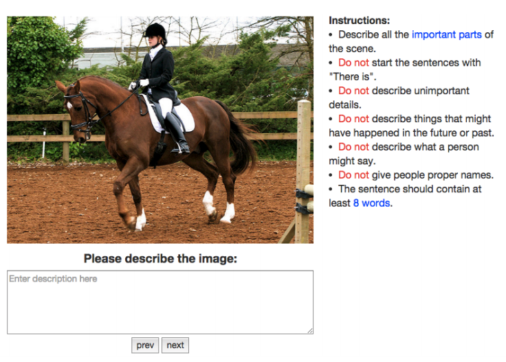
Interface used to describe images in the COCO Captions - https://arxiv.org/pdf/1504.00325.pdf
Therefore, to understand the captions in the data, pre-trained word embeddings are often used. Often, word embedding used in image captioning models tend to exaggerate biases present in training data, where words are not only influenced by an image, but also biased by the learned language model Burns et al., 2018, Women also Snowboard: Overcoming Bias in Captioning Models. Retrieved from https://arxiv.org/abs/1803.09797v3. Thus, text influences the image where language modify the visual representation.
These issues are not only occurring in image models, but also in all of the other datasets containing captions, for instance, in 3d object datasets.
Additionally, 3d based datasets are often clear examples of non-designed content, and the Shape Nets dataset, created by Princeton University and Stanford University, would be a clear example of that.In the paper ShapeNet: An Information-Rich 3D Model Repository, one of the reasons of the creation of dataset was to serve as a knowledge base for representing real-world objects and their semantics. As 3d content is becoming increasingly available and scanning methods is creating increasingly faithful 3D reconstructions of real environments Savva et al., 2015, Semantically-enriched 3D models for common-sense knowledge. In 2015 IEEE Conference on Computer Vision and Pattern Recognition Workshops [pp. 24–31]. Boston, MA, USA: IEEE. https://doi.org/10.1109/CVPRW.2015.7301289, the creators mainly scraped data from 3d model repositories. But when exploring the available taxonomies they share online,
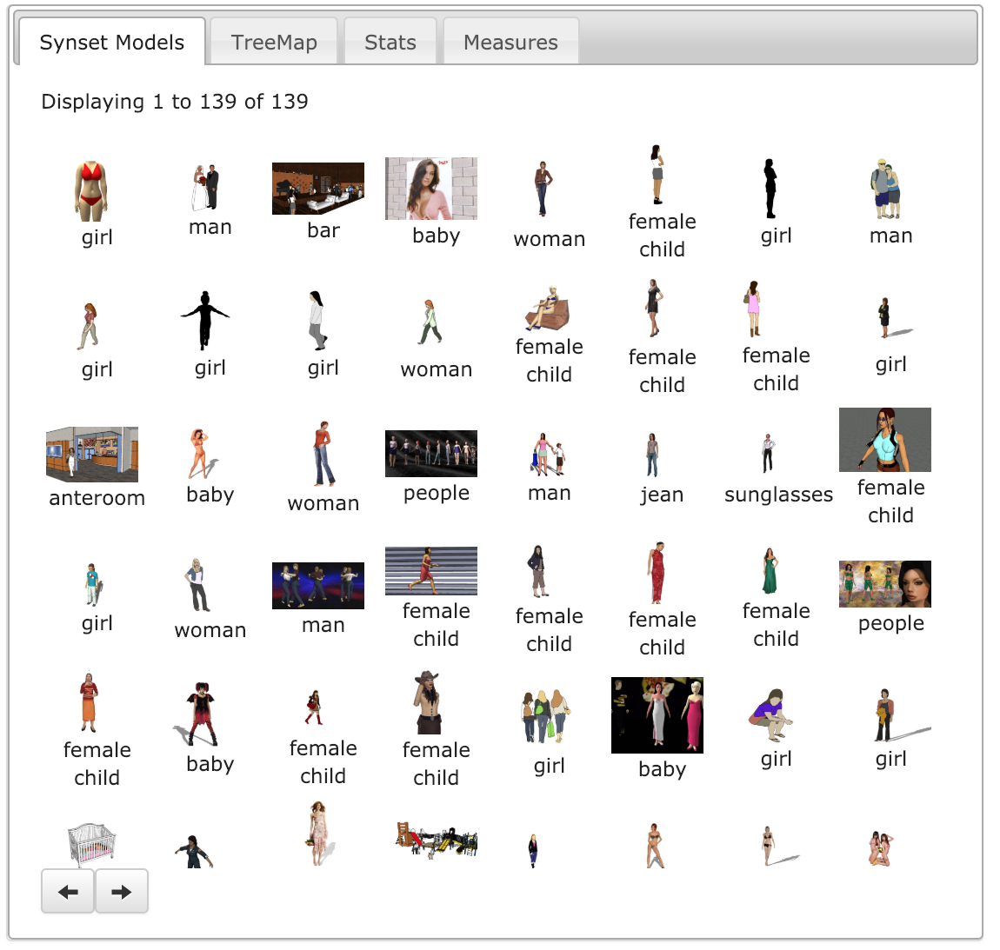
Results of the queries: Woman from Shapenet - https://www.shapenet.org/taxonomy-viewer
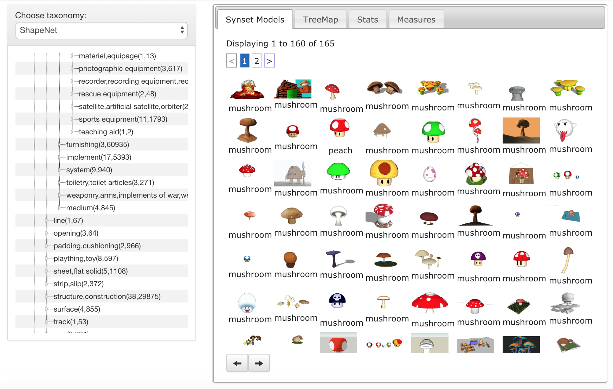
Results of the queries: Mushroom from Shapenet - https://www.shapenet.org/taxonomy-viewer
it is clear that part of the dataset is filled with 3D renderings made by private furniture manufacturers, used to promote their brand; or alternatively it contains data which is not at all representing real objects. By looking at the repositories from which these data are coming from, it is clear that they are mostly filled with piles of random material.
Geography of datasets
“Information has always had geography. It is from somewhere; about somewhere; it evolves and is transformed somewhere; it is mediated by networks, infrastructures, and technologies: all of which exist in physical, material places” Graham et al., 2015, Towards a study of information geographies: [im]mutable augmentations and a mapping of the geographies of information. Retrieved 17 January 2019, from https://rgs-ibg.onlinelibrary.wiley.com/doi/full/10.1002/geo2.8.
Datasets are no exception. As previously demonstrated, the information they carry is a reflection of time, politics and geographical contexts.
Although, as already emphasised, there is a lot of attention on certain types of biases, there is still a lack of interest for the ones carried by the hidden geographies of datasets. If in Code/Space, Robert Kitchin and Martin Dodge wrote: Software matters because it alters the conditions through which society, space, and time, and thus spatiality, are produced, from what it has been stated in the current thesis we could rewrite the sentence by saying that data matters, because it alters the conditions through which society, space, and time, and thus spatiality, are produced.
Kitchin and Dodge (2011) argue that the production of space is increasingly dependent on code, and analyse how code is written to produce space. On the other hand Mark Graham (2015) is interested in how people and places are ever more defined by their virtual attributes and digital shadows. While Kitchin and Dodge focus on physical spaces, e.g. the airport check-in areas, Graham researches the ones that are invisible, e.g. the geographies shaped by network providers and website users, which he then maps and analyses.
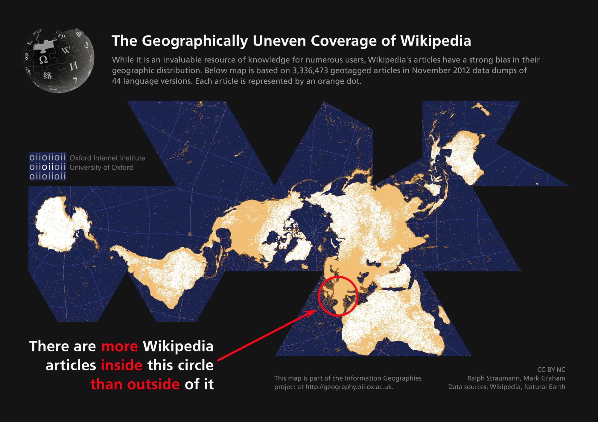
The geographically uneven coverage of Wikipedia - https://geonet.oii.ox.ac.uk/blog/the-geographically-uneven-coverage-of-wikipedia-2/
As Graham's field of research, the Internet Geography, questions who controls, and has access to, our digitally-augmented and digitally-mediated worlds; this body of text addresses the same questions. Although this thesis only gives a hint of the geographies that datasets create, it is clear that, similar to Graham's work, these learning materials shape the digital environment in which they operate.
Software produces multiple types of spatialities and datasets have their own geographic distribution. From the locations of their creators, that influence their browser navigation, to the digital platforms where the data is fetched, reaching until the original metadata of each source. All of these things are informational, but are also part of the place itself; they are part of how we enact and bring the place into being Kitchin & Dodge, 2011, Code/space: software and everyday life. Cambridge, Mass: MIT Press..
Firstly, datasets are shaped by the software-sorting geographies (un)willingly emphasised by their creators. Stephen D. N. Graham (2005) explains that the term software-sorting captures the crucial and often ignored role of code in directly, automatically and continuously allocating social or geographical access to all sorts of critical goods, services, life chances or mobility opportunities to certain social groups or geographical areas. Since the first step in the creation of a dataset is usually scraping data from the web, these last would be inherently filtered according to personal information, varying from individual to individual, but defined by search engines such as Google, Bing, Yahoo, etc.
Secondly, as explained with the previous case studies (e.g. the COCO dataset), the platform that distribute this data are absurdly Americocentric. Despite the goals of teaching machines how the world looks like, which researchers are pursuing, these geographies of information matter because they shape what is known, and what can be known about a place. And even in our age of connectivity, large parts of the planet remain left off the map.
At this moment we could ask ourselves what would be the point of mapping those datasets, if they originate from the same platforms that are already being studied by internet geographers.
Firstly, what the current research shows, is how those materials are a collection of illegally retrieved files. Chunks of COCO’s sources on Flickr clearly point out that those specific images contain reserved rights according to Creative Commons licences. And secondly it shows that the previously analysed text embeddings and Labelled faces in the wild are clear examples of a composite of information which are fetched from different platforms and then merged together.
Finally these geographies of datasets also show how rarely researchers are the only teachers. The ever-growing use of platforms such as Amazon Mechanical Turk, allow large groups of individuals to participate in creating, tagging and describing data.
Introduced by Amazon in 2005, the marketplace is named after an 18th century “automatic” chess-playing machine, which was handily beating humans in chess games.
Of course, the robot was not using any artificial intelligence algorithms back then. The secret of the Mechanical Turk machine was a human operator, hidden inside the machine, who was the real intelligence source Ipeirotis, 2010, Analyzing the Amazon Mechanical Turk marketplace. XRDS: Crossroads, The ACM Magazine for Students, 17, 16–21. https://doi.org/10.1145/1869086.1869094. Today, as previously mentioned, Amazon Mechanical Turk is a marketplace for tasks that cannot be easily automated, which are then fulfilled by human users; thus allowing these employers to shape newer invisible geographies. But who are the workers that complete these tasks?
Ipeirotis’s analysis shows that the majority of the workers are operating in the United States, with an increasing proportion coming from India in the past few years. But these analysis, like Graham’s, study the overall usage of those platforms, whereas there are no traces of the turkers who helped shape any globally used dataset.
Datasets are accepted as unproblematic pictures of the real. The same applies to maps Wood & Fels, 1992, The power of maps. New York: Guilford Press.. But, just like datasets, maps depict a subjective point of view Farinelli, 2009, La crisi della ragione cartografica. Torino: Einaudi.. Departing from this consideration, the field of critical cartography assumes that maps create reality as much as they represent it. Maps are active; they actively compose knowledge, they exercise power and they can be a powerful means of promoting social change Crampton & Krygier, 2015, An Introduction to Critical Cartography. ACME: An International Journal for Critical Geographies, 4, 11–33.
“Maps can be used to make counter-claims, to express competing interests, to make visible otherwise marginal experiences and hidden histories, to make practical plans for social change or to imagine utopian worlds.”
Brown and Laurier (2005) suggest that people are never simply map users and map reading is not just reading. Rather the use of maps helps finding solutions to broader dilemmas. Therefore, cartography is processual, where it is not important what a map actually is, neither what it does, but how it emerges from contingent, relational, context-embedded practices to solve relational problems Kitchin & Dodge, 2016, Rethinking maps. Progress in Human Geography. https://doi.org/10.1177/0309132507077082. Furthermore, the advent of location-based and remotely sensed computer technologies offers opportunities for new cartographic explorations of a complex world Casti, 2015, Reflexive cartography: a new perspective on mapping. Amsterdam ; Boston: Elsevier..
Datasets are gradually losing a connection with the original sources, where it is not clear who created the data, from where and when. Consequently, this chapter wants to stress the need to retrieve this information and by using a critical cartographic approach to highlight the geographies that datasets create. Whereas both Brown and Laurier (2005) and Kitchin and Dodge (2016) suggest to use maps to find solutions to problems, this research aims to visualise the spatial dimension that datasets create, and to spark a critical discussion around the decision that few individuals are taking.
Conclusion
“If scientific reasoning were limited to the logical processes of arithmetic, we should not get very far in our understanding of the physical world. One might as well attempt to grasp the game of poker entirely by the use of the mathematics of probability.” Bush, 1945, As We May Think. The Atlantic. Retrieved from https://www.theatlantic.com/magazine/archive/1945/07/as-we-may-think/303881/
The current thesis aimed to investigate the representation of the world that is currently taught to Artificial Intelligences, with a focus on the socio-cultural biases carried by machine learning systems. Specifically, it examined three specific typologies: datasets that are used to recognise images, language and objects.
The research has been structured in four chapters, each one based on a specific study.
The first chapter, Everything but the kitchen sink explained how empirical approaches became widely used to teach information to Artificial Intelligence. As the title suggested, the chapter introduced how machines are being fed with huge amounts of data to learn from, which inevitably carry biases.
Bias as a bug questioned the actions adopted to hide biases in machine learning systems, and analysed how technologies, or more specifically algorithms, were created to fix other algorithms. This led to a study that showed how those approaches are just mathematically balancing dataset, and in fact, not removing biases.
The third chapter, Bias as a feature discussed the impossibility of teaching Artificial Intelligence impartially, and focused on how dataset are visualised. It pointed out that the elements within datasets are just compared between themselves, ignoring any link with their sources, which would be essential to understand how biases originate.
As emphasised by the case studies developed in the last chapter, Bias as Artefacts explained how datasets carry geographical and temporal biases which are not yet being studied. Furthermore, this chapter suggested to use cartography as a tool to investigate the unequal geographies that datasets create.
The examples investigated in the last chapter are not confined anomalies. However, those three typologies wanted to give a specific focus on discriminations between classes, gender and nationality. They showed how datasets carry stratified features from our society which are often intertwined with algorithms, amplifying biases.
It is impossible to state that biases could be removed from machine learning systems. Furthermore, this thesis concludes that without paying attention to the geographical features that datasets carry, machine learning technologies will continue to emphasise prejudice and bigotry, even when tools to remove biases are used.
Additionally, the present research builds the basis for an information design methodology focused on studying and mapping datasets. It informs the design with both content and critical thinking, where specific instruments have been developed to investigate datasets. In the research these tools have been used to analyse the increased attention towards debiasing techniques, and have been essential to the recovery of geographical and temporal features in datasets. They will be inevitably developed further in the design. The visual representation of Bias, contained in the third chapter, clarified that datasets are represented by quantitatively or reductively means, with the goal of showing data or their performance, but not to explain them. But as Jacques Lévy claimed in his metaphor, we need to “change lenses” to observe this new world Casti, 2013, Cartografia critica: Dal topos alla chora. Milano: Guerini scientifica., and the designer has the tools and knowledge to adopt a different investigative approach; filtering information, focusing on their geography and questioning the media through which they are being delivered.
Concurrently, when talking about the spatial turn in geography, namely the relationship between power and space, Farinelli (2014) questions why there is still not a possible geography of the Web, “nobody knows what is there, how it works, what kind of world is”.
“Perhaps it is also for this reason, to understand a little more, that I now think that the continuation of spatial turn is directly in the field of cognitive sciences, artificial intelligence, i.e. digital systems. The spatial turn has limited itself to trying to show the map hidden under the literary description, but a digital system is the map of a map, that's where we must, at this point, bring the challenge.” Icaoli, 2014, Points on the Maps. A Conversation with Franco Farinelli, about cartographic rhetorics. Between
As Farinelli calls for a focus on digital geographies, which still suffers from a lack of attention, the same applies for the need for an “algorithmic culture” Dourish, 2016, Algorithms and their others: Algorithmic culture in context. Big Data & Society, 205395171666512. https://doi.org/10.1177/2053951716665128Gillespie, 2013, Tarleton Gillespie: ‘The Relevance of Algorithms’. Retrieved 30 January 2019, from https://vimeo.com/69641358Gillespie, T., & Seaver, N., 2015, Critical Algorithm Studies: a Reading List. Retrieved 18 January 2019, from https://socialmediacollective.org/reading-lists/critical-algorithm-studies/Striphas, 2015, Algorithmic culture. European Journal of Cultural Studies, 18, 395–412. https://doi.org/10.1177/1367549415577392. Or more specifically an algorithmic literacy Gillespie, 2013, Tarleton Gillespie: ‘The Relevance of Algorithms’. Retrieved 30 January 2019, from https://vimeo.com/69641358, making people understand that the tools they engage with will give certain types of answers back, and if they find those politically troubling, they should see them as artefacts of the way those systems work (ibidem).
Designers can draw knowledge from, and investigate, completely different fields. And the current thesis is based upon these interdisciplinary concepts. From computer science to geography. From philosophy to engineering.
At the same time information designers are not merely researchers. And they should neither be referred to by narrow definitions such as data detectives, a term that sometimes, might be replaced with makers of “unedited visual data dumping” Holmes, 2014, on Using Humor to Illustrate Data That Tells a Story. Retrieved 31 January 2019, from https://www.aiga.org/nigel-holmes-on-using-humor-to-illustrate-data-that-tells-a-story. Instead, designers can have an essential editorial role, to build critical knowledge by looking at the question of how information is curated and the role technologies play in this. Furthermore, designers are capable of questioning information and spreading awareness, even outside of the strict journalistic sense, by focusing on what Verbeek (2005) defines as mediated morality:
“Designers cannot but help to shape moral decisions and practices. Designing is materializing morality.”
Bibliography
Books
Bezdek, J. C., Keller, J., Krisnapuram, R., & Pal, N. R. (2005). Fuzzy Models and Algorithms for Pattern Recognition and Image Processing. Boston, MA: Springer Science+Business Media, Inc.
Bowker, G. C., & Star, S. L. (1999). Sorting things out: classification and its consequences. Cambridge, Mass: MIT Press.
Casti, E. (2013). Cartografia critica: Dal topos alla chora. Milano: Guerini scientifica.
Casti, E. (2015). Reflexive cartography: a new perspective on mapping. Amsterdam ; Boston: Elsevier.
Farinelli, F. (2009). La crisi della ragione cartografica. Torino: Einaudi.
Floridi, L. (2011). The philosophy of information. Oxford ; New York: Oxford University Press.
Fuller, M. (Ed.). (2008). Software studies: a lexicon. Cambridge, Mass: MIT Press.
Gould, S. J. (2008). Bully for Brontosaurus: Reflections in Natural History. New York: Paw Prints ;
Heidegger, M. (1927). Sein und Zeit. Halle: M. Niemeyer.
Holmes, N., & Heller, S. (Eds.). (2006). Nigel Holmes: on information design. New York: Jorge Pinto Books.
Kitchin, R., & Dodge, M. (2011). Code/space: software and everyday life. Cambridge, Mass: MIT Press.
Latour, B. (1987). Science in action: how to follow scientists and engineers through society. Cambridge, Massachusetts: Harvard University Press.
Lombroso, C. (1897). L’Uomo Delinquente.
Manning, C. D., & Schütze, H. (2005). Foundations of statistical natural language processing (8. [print.]). Cambridge, Mass.: MIT Press.
Manovich, L. (2013). Software takes command: extending the language of new media. New York ; London: Bloomsbury.
McLuhan, M. (1964). Understanding media : the extensions of man. McGraw-Hill.
Noble, S. U. (2018). Algorithms of oppression: how search engines reinforce racism. New York: New York University Press.
Pasquale, F. (2015). The black box society: the secret algorithms that control money and information. Cambridge, Mass.: Harvard Univ. Press.
Pearl, J., & Mackenzie, D. (2018). The book of why: the new science of cause and effect (First edition). New York: Basic Books.
Sennett, R. (2018). Building and Dwelling: ethics for the city. New York: Farrar, Straus and Giroux.
Tegmark, M. (2017). Life 3.0: being human in the age of artificial intelligence (First edition). New York: Alfred A. Knopf.
Tufte, E. R. (1983). The visual display of quantitative information. Cheshire, CT: Graphic Press.
Verbeek, P.-P. (2005). What things do: Philosophical reflections on technology, agency, and design. University Park, Pa: Pennsylvania State University Press.
Verbeek, P.-P. (2011). Moralizing technology: understanding and designing the morality of things. Chicago ; London: The University of Chicago Press.
Wood, D., & Fels, J. (1992). The power of maps. New York: Guilford Press.
Journals
Berg, T. L., Berg, A. C., Edwards, J., & Forsyth, D. A. (2005). Who’s in the Picture? In Advances in Neural Information Processing Systems 17: Proceedings of the 2004 Conference (Vol. 17, p. 137). MIT Press.
Blanchard, M. G. (1976). Sex education for spinal cord injury patients and their nurses. Supervisor Nurse, 7(2), 20–22, 24–26, 28.
Bolukbasi, T., Chang, K.-W., Zou, J., Saligrama, V., & Kalai, A. (2016). Man is to Computer Programmer as Woman is to Homemaker? Debiasing Word Embeddings. Retrieved from https://arxiv.org/abs/1607.06520v1
Boyd, D., & Crawford, K. (2012). CRITICAL QUESTIONS FOR BIG DATA: Provocations for a cultural, technological, and scholarly phenomenon. Information, Communication & Society, 15(5), 662–679. https://doi.org/10.1080/1369118X.2012.678878
Brown, B., & Laurier, E. (2006). Maps and Journeys: An Ethno-methodological Investigation. Cartographica: The International Journal for Geographic Information and Geovisualization. https://doi.org/10.3138/6QPX-0V10-24R0-0621
Burns, K., Hendricks, L. A., Saenko, K., Darrell, T., & Rohrbach, A. (2018). Women also Snowboard: Overcoming Bias in Captioning Models. Retrieved from https://arxiv.org/abs/1803.09797v3
Caesar, H., Uijlings, J., & Ferrari, V. (2016). COCO-Stuff: Thing and Stuff Classes in Context. Retrieved from https://arxiv.org/abs/1612.03716v4
Caliskan-Islam, A., Bryson, J. J., & Narayanan, A. (2016). Semantics derived automatically from language corpora contain human-like biases. https://doi.org/10.1126/science.aal4230
Chen, X., Fang, H., Lin, T.-Y., Vedantam, R., Gupta, S., Dollar, P., & Zitnick, C. L. (2015). Microsoft COCO Captions: Data Collection and Evaluation Server. Retrieved from https://arxiv.org/abs/1504.00325v2
Crampton, J. W., & Krygier, J. (2015). An Introduction to Critical Cartography. ACME: An International Journal for Critical Geographies, 4(1), 11–33.
Deng, J., Dong, W., Socher, R., Li, L.-J., Kai Li, & Li Fei-Fei. (2009). ImageNet: A large-scale hierarchical image database. In 2009 IEEE Conference on Computer Vision and Pattern Recognition (pp. 248–255). Miami, FL: IEEE. https://doi.org/10.1109/CVPR.2009.5206848
Dourish, P. (2016). Algorithms and their others: Algorithmic culture in context. Big Data & Society, 3(2), 205395171666512. https://doi.org/10.1177/2053951716665128
Ensmenger, N. (2012). Is chess the drosophila of artificial intelligence? A social history of an algorithm. Social Studies of Science, 42(1), 5–30. https://doi.org/10.1177/0306312711424596
Floridi, L., & Taddeo, M. (2016). What is data ethics? Philosophical Transactions of the Royal Society A: Mathematical, Physical and Engineering Sciences, 374(2083), 20160360. https://doi.org/10.1098/rsta.2016.0360
Gips, J., & Stiny, G. (1975). An Investigation of Algorithmic Aesthetics. Leonardo, 8(3), 213. https://doi.org/10.2307/1573240
Graham, S., & Wood, D. (2003). Digitizing Surveillance: Categorization, Space, Inequality. Critical Social Policy, 23(2), 227–248. https://doi.org/10.1177/0261018303023002006
Grave, E., Bojanowski, P., Gupta, P., Joulin, A., & Mikolov, T. (2018). Learning Word Vectors for 157 Languages. Retrieved from https://arxiv.org/abs/1802.06893v2
Gu, C., Sun, C., Ross, D. A., Vondrick, C., Pantofaru, C., Li, Y., … Malik, J. (2017). AVA: A Video Dataset of Spatio-temporally Localized Atomic Visual Actions. Retrieved from https://arxiv.org/abs/1705.08421v4
Hendrickson, W. A., & Ward, K. B. (1975). Atomic models for the polypeptide backbones of myohemerythrin and hemerythrin. Biochemical and Biophysical Research Communications, 66(4), 1349–1356.
Iacoli, G. (2014). Points on the Maps. A Conversation with Franco Farinelli, about cartographic rhetorics. Between, 4(7).
Ipeirotis, P. G. (2010). Analyzing the Amazon Mechanical Turk marketplace. XRDS: Crossroads, The ACM Magazine for Students, 17(2), 16–21. https://doi.org/10.1145/1869086.1869094
Kamiran, F., & Calders, T. (2012). Data preprocessing techniques for classification without discrimination. Knowledge and Information Systems, 33(1), 1–33. https://doi.org/10.1007/s10115-011-0463-8
Klare, B. F., Burge, M. J., Klontz, J. C., Vorder Bruegge, R. W., & Jain, A. K. (2012). Face Recognition Performance: Role of Demographic Information. IEEE Transactions on Information Forensics and Security, 7(6), 1789–1801. https://doi.org/10.1109/TIFS.2012.2214212
Lin, T.-Y., Maire, M., Belongie, S., Bourdev, L., Girshick, R., Hays, J., … Dollár, P. (2014). Microsoft COCO: Common Objects in Context. Retrieved from https://arxiv.org/abs/1405.0312v3
Lucas D. Introna, Helen Nissenbaum. (2000). Shaping the Web: Why the Politics of Search Engines Matters. The Information Society, 16(3), 169–185. https://doi.org/10.1080/01972240050133634
Mikolov, T., Chen, K., Corrado, G., & Dean, J. (2013). Efficient Estimation of Word Representations in Vector Space. Retrieved from https://arxiv.org/abs/1301.3781v3
Mikolov, T., Sutskever, I., Chen, K., Corrado, G., & Dean, J. (2013). Distributed Representations of Words and Phrases and their Compositionality. Retrieved from https://arxiv.org/abs/1310.4546v1
Niquille, S. C. (2019). Regarding the Pain of SpotMini: Or What a Robot’s Struggle to Learn Reveals about the Built Environment. Architectural Design, 89(1), 84–91. https://doi.org/10.1002/ad.2394
Norouzi, M., Mikolov, T., Bengio, S., Singer, Y., Shlens, J., Frome, A., … Dean, J. (2013). Zero-Shot Learning by Convex Combination of Semantic Embeddings. Retrieved from https://arxiv.org/abs/1312.5650v3
Savva, M., Chang, A. X., & Hanrahan, P. (2015). Semantically-enriched 3D models for common-sense knowledge. In 2015 IEEE Conference on Computer Vision and Pattern Recognition Workshops (CVPRW) (pp. 24–31). Boston, MA, USA: IEEE. https://doi.org/10.1109/CVPRW.2015.7301289
Selbst, A. D., & Barocas, S. (2018). The Intuitive Appeal of Explainable Machines. SSRN Electronic Journal. https://doi.org/10.2139/ssrn.3126971
Wachter, S., Mittelstadt, B., & Floridi, L. (2017). Transparent, explainable, and accountable AI for robotics. Science Robotics, 2(6), eaan6080. https://doi.org/10.1126/scirobotics.aan6080
Wu, X., & Zhang, X. (2016). Responses to Critiques on Machine Learning of Criminality Perceptions (Addendum of arXiv:1611.04135). Retrieved from https://arxiv.org/abs/1611.04135v3
Zhao, J., Wang, T., Yatskar, M., Ordonez, V., & Chang, K.-W. (2017). Men Also Like Shopping: Reducing Gender Bias Amplification using Corpus-level Constraints. Retrieved from https://arxiv.org/abs/1707.09457v1
Gillespie, T. (2013, May 17). Tarleton Gillespie: ‘The Relevance of Algorithms’. Retrieved 30 January 2019, from https://vimeo.com/69641358
Graham, M., De Sabbata, S., & A. Zook, M. (n.d.). Towards a study of information geographies: (im)mutable augmentations and a mapping of the geographies of information. Retrieved 17 January 2019, from https://rgs-ibg.onlinelibrary.wiley.com/doi/full/10.1002/geo2.8
This publication resulted from research conducted as part of the individual thesis project in the master department Information Design at Design Academy Eindhoven (NL), 2019.
Tutor:
Joost Grootens, Gert Staal,
Vincent Thornhill, Irene Stracuzzi,
Simon Davies, Noortje van Eekelen,
Maurits de Bruijn, Koehorst in 't Veld.
Typeset:
Fk Grotesk by Florian Karsten,
Burgess by Colophon Foundry